<!DOCTYPE html>
<html lang="ml">
<head>
  <meta charset="utf-8">
  <meta name="viewport" content="width=device-width, initial-scale=1.0">
  <title>Chapter 2 (Pages 27-46) - Class 9 Basic_science</title>
  <style>

:root {
  --bg-color: #fcfcfd;
  --card-bg: #ffffff;
  --text-color: #1e293b;
  --text-muted: #64748b;
  --primary-color: #0284c7;
  --primary-light: #e0f2fe;
  --border-color: #e2e8f0;
  --radius: 10px;
  --shadow: 0 4px 6px -1px rgb(0 0 0 / 0.05), 0 2px 4px -2px rgb(0 0 0 / 0.05);
}

body {
  font-family: -apple-system, BlinkMacSystemFont, "Segoe UI", Roboto, "Noto Sans Malayalam", "Manjari", "Gayathri", sans-serif;
  background-color: var(--bg-color);
  color: var(--text-color);
  line-height: 1.8;
  font-size: 1.1rem;
  margin: 0;
  padding: 0;
}

.container {
  max-width: 860px;
  margin: 0 auto;
  padding: 2.5rem 1.5rem 5rem 1.5rem;
}

header {
  margin-bottom: 2.5rem;
  padding-bottom: 1.5rem;
  border-bottom: 2px solid var(--border-color);
}

.badge-row {
  display: flex;
  gap: 0.5rem;
  margin-bottom: 0.75rem;
  flex-wrap: wrap;
}

.badge {
  display: inline-block;
  font-size: 0.75rem;
  font-weight: 700;
  text-transform: uppercase;
  letter-spacing: 0.05em;
  padding: 0.25rem 0.65rem;
  border-radius: 9999px;
  background: var(--primary-light);
  color: var(--primary-color);
}

.badge-medium {
  background: #fef3c7;
  color: #b45309;
}

.badge-class {
  background: #dcfce7;
  color: #15803d;
}

h1 {
  font-size: 2.1rem;
  font-weight: 800;
  margin: 0.5rem 0 1rem 0;
  line-height: 1.3;
  color: #0f172a;
}

.nav-bar {
  display: flex;
  justify-content: space-between;
  margin: 1.5rem 0;
  font-size: 0.95rem;
  flex-wrap: wrap;
  gap: 0.5rem;
}

.nav-bar a {
  color: var(--primary-color);
  text-decoration: none;
  font-weight: 600;
  padding: 0.5rem 1rem;
  border-radius: var(--radius);
  background: var(--card-bg);
  border: 1px solid var(--border-color);
  transition: all 0.2s ease;
}

.nav-bar a:hover {
  background: var(--primary-light);
  border-color: var(--primary-color);
}

.nav-bar .disabled {
  color: var(--text-muted);
  pointer-events: none;
  border-color: transparent;
  background: transparent;
}

.page-section {
  background: var(--card-bg);
  border: 1px solid var(--border-color);
  border-radius: var(--radius);
  box-shadow: var(--shadow);
  padding: 2rem;
  margin-bottom: 2.5rem;
}

.page-header {
  display: flex;
  align-items: center;
  justify-content: space-between;
  margin-bottom: 1.25rem;
  padding-bottom: 0.5rem;
  border-bottom: 1px dashed var(--border-color);
}

.page-number {
  font-size: 0.8rem;
  font-weight: 700;
  text-transform: uppercase;
  color: var(--text-muted);
  letter-spacing: 0.05em;
}

.page-content p {
  margin: 0 0 1.25rem 0;
  white-space: pre-wrap;
  word-break: break-word;
}

.page-content p:last-child {
  margin-bottom: 0;
}

.diagram-card {
  margin: 2rem 0;
  text-align: center;
  background: #f8fafc;
  border: 1px solid var(--border-color);
  border-radius: var(--radius);
  padding: 1rem;
  overflow: hidden;
}

.diagram-card img {
  max-width: 100%;
  height: auto;
  border-radius: calc(var(--radius) - 4px);
  display: inline-block;
  box-shadow: 0 2px 4px rgba(0,0,0,0.04);
}

.diagram-card figcaption {
  font-size: 0.85rem;
  color: var(--text-muted);
  margin-top: 0.75rem;
  font-weight: 500;
}

footer {
  margin-top: 3rem;
  padding-top: 2rem;
  border-top: 2px solid var(--border-color);
}

  </style>
</head>
<body>
  <div class="container">
    <header>
      <div class="badge-row">
        <span class="badge badge-class">Class 9</span>
        <span class="badge badge-medium">Malayalam Medium</span>
        <span class="badge">Basic science</span>
        <span class="badge">Part 1</span>
      </div>
      <h1>Chapter 2 (Pages 27-46)</h1>
      <div class="nav-bar"><a href="part_1_chapter_01.html">← Chapter 1 (Pages 7-26)</a><a href="index.html">☰ Index</a><a href="part_1_chapter_03.html">Chapter 3 (Pages 47-66) →</a></div>
    </header>
    <main>
      <section class="page-section" id="page-27">
  <div class="page-header"><span class="page-number">Page 27</span></div>
  <figure class="diagram-card" id="fig_ch02_p027_01"><figcaption>Figure fig_ch02_p027_01 (Page 27)</figcaption></figure>
  <figure class="diagram-card" id="fig_ch02_p027_02"><figcaption>Figure fig_ch02_p027_02 (Page 27)</figcaption></figure>
  <figure class="diagram-card" id="fig_ch02_p027_03"><figcaption>Figure fig_ch02_p027_03 (Page 27)</figcaption></figure>
  <figure class="diagram-card" id="fig_ch02_p027_04"><figcaption>Figure fig_ch02_p027_04 (Page 27)</figcaption></figure>
  <figure class="diagram-card" id="fig_ch02_p027_05"><figcaption>Figure fig_ch02_p027_05 (Page 27)</figcaption></figure>
  <figure class="diagram-card" id="fig_ch02_p027_06"><figcaption>Figure fig_ch02_p027_06 (Page 27)</figcaption></figure>
  <figure class="diagram-card" id="fig_ch02_p027_07"><figcaption>Figure fig_ch02_p027_07 (Page 27)</figcaption></figure>
  <figure class="diagram-card" id="fig_ch02_p027_08"><figcaption>Figure fig_ch02_p027_08 (Page 27)</figcaption></figure>
  <figure class="diagram-card" id="fig_ch02_p027_09"><figcaption>Figure fig_ch02_p027_09 (Page 27)</figcaption></figure>
  <figure class="diagram-card" id="fig_ch02_p027_10"><figcaption>Figure fig_ch02_p027_10 (Page 27)</figcaption></figure>
  <figure class="diagram-card" id="fig_ch02_p027_11"><figcaption>Figure fig_ch02_p027_11 (Page 27)</figcaption></figure>
  <figure class="diagram-card" id="fig_ch02_p027_12"><figcaption>Figure fig_ch02_p027_12 (Page 27)</figcaption></figure>
  <div class="page-content">
    <p>f”ā‘cf„DzsšŽšȹā‘c</p>
    <p>Š›–›g fšc †žǯšĬ›Æ sšÅ•›s –Ơ„§“Dz“ǚ ”Þ›¡ƀĞ‚§
ˆ‚› f”ā‘¡} f“›Å‹š“Ĺ›†§ ˆDžšĹc pŽÚ›‚§
mā¡†?xÅă¡xƮs</p>
    <p>£z†Œ‚c
“Å Œš†Œ—š“œŽÄŠœ—š›¡ £“”š›Ú§ –ŒœˆŒǬsŭ÷šŒ
śš§z†›ă‚§£z†Œ‚“›”ǵš–ƂsšŽc24šŒ¡Ĺ‚œÅƒÿŽ†š§
“Å Œš†Œ—š“œŽÄ</p>
    <p>‚œÅƒÿŽŶšÅ
͖†Dzš–Ĺ›ž¡} 蚆c ¢†}›“ÄÎ mųš§ ͂œÅƒ
ÿŽÄÎ mų “šÚ›†Åƒc £z†Œ‚ “›”ǵš–ƂsšŽc 24
‚œÅƒÿŽŶšŽĬ§ e‚›Æ k•‹¢„“†š§ pųšŒ¡Ĺ
‚œÅƒÿŽÄ 23šŒ¡Ĺ ‚œÅƒÿŽÄ ˆšÅ”ǵ†šƒÄ f›
Žų “Å Œš† Œ—š“œŽÄ 24 šŒ¡Ĺ ( e“–š†
¡Ĺc)‚œÅƒÿŽ†š§ˆšÅ”ǵ†šƒ¡źf”ā¢‘š}§
‚¡ź ‚‚ǵāÇ sžĞ›¢ăÅŚ§ Œ—š“œŽÄ £z†Œ‚
ŒƒŽ›Æ†›ųc‹›ă
f”āÇƂxŽ›ƀ›ă‚§
‚œÅƒÿŽ¡źƂ‚›Œ</p>
    <p>£“”š››Æz††c</p>
    <p>“Å Œš†
Œ—š“œŽÄ</p>
    <p>Œ—š“œŽÄmųcz›†Ä
mųce›¡ƀН
ˆš“ ˆšǯ§†Ʃ§–Œœˆc 
mųǚĹ“ă§
†›Å“šcƂšˆ›ă</p>
    <p>ǢšÄ¢Å§-&lt;</p>
    <p>27</p>
  </div>
</section><section class="page-section" id="page-28">
  <div class="page-header"><span class="page-number">Page 28</span></div>
  <figure class="diagram-card" id="fig_ch02_p028_01"><figcaption>Figure fig_ch02_p028_01 (Page 28)</figcaption></figure>
  <figure class="diagram-card" id="fig_ch02_p028_02"><figcaption>Figure fig_ch02_p028_02 (Page 28)</figcaption></figure>
  <figure class="diagram-card" id="fig_ch02_p028_03"><figcaption>Figure fig_ch02_p028_03 (Page 28)</figcaption></figure>
  <figure class="diagram-card" id="fig_ch02_p028_04"><figcaption>Figure fig_ch02_p028_04 (Page 28)</figcaption></figure>
  <figure class="diagram-card" id="fig_ch02_p028_05"><figcaption>Figure fig_ch02_p028_05 (Page 28)</figcaption></figure>
  <figure class="diagram-card" id="fig_ch02_p028_06"><figcaption>Figure fig_ch02_p028_06 (Page 28)</figcaption></figure>
  <figure class="diagram-card" id="fig_ch02_p028_07"><figcaption>Figure fig_ch02_p028_07 (Page 28)</figcaption></figure>
  <figure class="diagram-card" id="fig_ch02_p028_08"><figcaption>Figure fig_ch02_p028_08 (Page 28)</figcaption></figure>
  <figure class="diagram-card" id="fig_ch02_p028_09"><figcaption>Figure fig_ch02_p028_09 (Page 28)</figcaption></figure>
  <figure class="diagram-card" id="fig_ch02_p028_10"><figcaption>Figure fig_ch02_p028_10 (Page 28)</figcaption></figure>
  <figure class="diagram-card" id="fig_ch02_p028_11"><figcaption>Figure fig_ch02_p028_11 (Page 28)</figcaption></figure>
  <figure class="diagram-card" id="fig_ch02_p028_12"><figcaption>Figure fig_ch02_p028_12 (Page 28)</figcaption></figure>
  <figure class="diagram-card" id="fig_ch02_p028_13"><figcaption>Figure fig_ch02_p028_13 (Page 28)</figcaption></figure>
  <figure class="diagram-card" id="fig_ch02_p028_14"><figcaption>Figure fig_ch02_p028_14 (Page 28)</figcaption></figure>
  <figure class="diagram-card" id="fig_ch02_p028_15"><figcaption>Figure fig_ch02_p028_15 (Page 28)</figcaption></figure>
  <figure class="diagram-card" id="fig_ch02_p028_16"><figcaption>Figure fig_ch02_p028_16 (Page 28)</figcaption></figure>
  <figure class="diagram-card" id="fig_ch02_p028_17"><figcaption>Figure fig_ch02_p028_17 (Page 28)</figcaption></figure>
  <figure class="diagram-card" id="fig_ch02_p028_18"><figcaption>Figure fig_ch02_p028_18 (Page 28)</figcaption></figure>
  <div class="page-content">
    <p>e Dzšc</p>
    <p>¢šsś¡mƽš“ǙÚÇڝc zœ“†Ĭ§</p>
    <p>£z†Œ‚
f”āÇ</p>
    <p>zœ“†Ǭpų›¡†ciˆŝ“›ÚŽ‚§
zŶ“c ˆ†ÅzŶ“c †›Dž›Ú¡ƀ}ų‚§
sÅƣś¡źe}›ǚš†Ĺ›š§</p>
    <p>¢“„ā‘¡} f ›sšŽ›s‚¡ ‚Ǭ›ƀĚ Œ—š“œŽÄ ¢ŒšäƂšž›
ښ› Œžų ‚‚ǵāÇ Œ¢ųšĞ“㝠”Ž›š “›”ǵš–c ”Ž›š
e›“§”Ž›šƂƾśmų›“š›Žųe“g‚§ ÍŅ›ŽŀāÇÎ
mų›¡ƀ}ųƂšÕ‚§‹š•s‘›š§Œ—š“œŽÄ‚¡źf”āÇ
z†ā‘Œš›ˆÿ“ェ£z†Œ‚ƂsšŽc–†Dzš–›ŒšŽc–†Dzš–›†›
s‘ceĕǀ‚āÇe†Ǒ›ÚŒš›Žųpų›¡†c¡sšƽŽ‚§
¢Œšǐ›ÚŽ‚§ sǬc ˆŽ‚§ ƖǦxŽDzc e†Ǒ›Ús –ǵŧ
£s“”c“Ʃš‚›Ž›Úsmų›“š›Žųe“ˆ›ÆښĹ§ £z†
Œ‚Ĺ›Æ¢”ǵ‚cŠŽŶšÅ„›ucŠŽŶšÅmųœŽĬ“›‹šuāÇŽžˆ¡ƀН
£z†Œ‚cjųƆÆs›e—›c–mų‚‚ǵcgŦDzÄ‚‚ǵx›Ŧ¡
–ǵš œ†›ă›ĞĬ§</p>
    <p>¢sŽ‘“c£z†Œ‚“c
gŦDz›¡“›“› ‹šuā‘›ÆƂxŽ›ă £z†Œ‚c¢sŽ‘Ĺ›cƂxšŽĹ›Ĭš›
Žų“†š}§¢sŽ‘Ĺ›¡Ƃ š†¡ƀĞ£z†Œ‚¢sůŒš›Žų£z†Œ‚¢”•›ƀ
s‘š¢äŅāÇg¢ƀš’cg“›¡}†›†›ÆڝųĬ§</p>
    <p>“†šĞ›¡ £z†Œ‚¢äŅc</p>
    <p>28</p>
    <p>–šŒž—Dz”šȼc-</p>
  </div>
</section><section class="page-section" id="page-29">
  <div class="page-header"><span class="page-number">Page 29</span></div>
  <figure class="diagram-card" id="fig_ch02_p029_01"><figcaption>Figure fig_ch02_p029_01 (Page 29)</figcaption></figure>
  <figure class="diagram-card" id="fig_ch02_p029_02"><figcaption>Figure fig_ch02_p029_02 (Page 29)</figcaption></figure>
  <figure class="diagram-card" id="fig_ch02_p029_03"><figcaption>Figure fig_ch02_p029_03 (Page 29)</figcaption></figure>
  <figure class="diagram-card" id="fig_ch02_p029_04"><figcaption>Figure fig_ch02_p029_04 (Page 29)</figcaption></figure>
  <figure class="diagram-card" id="fig_ch02_p029_05"><figcaption>Figure fig_ch02_p029_05 (Page 29)</figcaption></figure>
  <figure class="diagram-card" id="fig_ch02_p029_06"><figcaption>Figure fig_ch02_p029_06 (Page 29)</figcaption></figure>
  <figure class="diagram-card" id="fig_ch02_p029_07"><figcaption>Figure fig_ch02_p029_07 (Page 29)</figcaption></figure>
  <figure class="diagram-card" id="fig_ch02_p029_08"><figcaption>Figure fig_ch02_p029_08 (Page 29)</figcaption></figure>
  <div class="page-content">
    <p>f”ā‘cf„DzsšŽšȹā‘c</p>
    <p>„ftā‘¡} sšŽc¢‚}›u‚ŒŠŗÄ</p>
    <p>„›v†›sš›ÆNjœŠŗ¡ź£„ÅvDz¢Œ›Ƃ‹š•ā‘›ÆŒƀśpųšŒ¡Ĺ
–žÞśÆŠŗŒ‚Ĺ›Æˆ‚‚š›¢xÅų“š“›¢†š}§NjœŠŗĈų‚§
gƂsšŽŒš§
s}cŠzœ“›‚Ĺ›Æ ˆŽ•†c ȼœc ˆŽǝŽ f„Ž¢“š¡} zœ“›¢ÚĬ‚c
ŽĬ¢ˆŽc ‚ā‘¢}‚š xŒ‚sÇ ՂDzŒš› †›Å“—›¢ÚĬ‚ŒĬ§ g‚
sž}š¡‚
¡‚š’›}ŒsÇ ‚ā‘¡}
¢–“s¢Žš}c ¡‚š’›š‘›s¢‘š}c
ŒŽDzš„¢š¡} ¡ˆŽŒšc e“Ž¡} ”šŽœŽ›s䌂›c sž}‚Æ ‹šŽ
ŒǬ ¢zš›sÇ e“¡Ž¡ÚšĬ§ ¡xƮ›ÚŽ‚§ e“ÅÚ§ f“”DzŒš
f—šŽ“c †DzšŒš sž›c †Æsc ”šŽœŽ›s Œš†–›s e“”‚s
‘›Æ e“¡Ž –cŽä›Úc ¡‚š’›š‘›s‘š“¡Ğ e“Ž¡} †DzšŒš ¢“‚
†Ĺ›Æ ĶžŽš› †ųš› ¢zš›¡xƮc ‚ā‘¡} ¡‚š’›}Œ¡} eŦǡ§
†›†›ÅŁc</p>
    <p>Šŗ¡źiˆ¢„”ā‘c‚‚ǵā‘c“‘¡Ž‘›‚“cƂš¢š
u›s“Œš›Žų ¢“„ā¡‘c šuā¡‘c zš‚›“Dz“
ǚ¡c e¢Ŕ—c †›ŽšsŽ›ă ucuš‚}ś¡ ˆ‚›
–š—xŽDzāÇÚ§gāų‚š›Žųe¢Ŕ—cŒ¢ųšĞ
“ăÍe—›c–Îmųf”csšÅ•›sƾś›ÆՕ›
ښ› †›¡ŒšŽÚš†c să“}“ǙÚÇ ¡sšĬ¢ˆš
sš†c sųsš›sÇ f“”DzŒš›Žų mųšÆ
šuā‘›Æsųsš›s¡‘ “DzšˆsŒš›Š›†Æs›‚§
Օ›¡c xŽÚ†œÚ¡Ĺc Ƃ‚›sžŒš› Šš ›ă
šuāǡڂ›Žš e¢Ŕ—Ĺ›¡ź †›ˆš}§  sšÅ•›s
ƾś›Æ nÅ¡ƀĞ“¡Ž fsŕ›ă –š šŽÚšŽ¡ź
‹š•š›Žųˆš››Æf§ŠŗÄ‚¡źf”āÇ
ƂxŽ›ˆ›ă‚§
Šŗ¡źzœ“›‚Ĺ›¡–Ƃ š†–c‹“ā‘š§ x“¡}
†Æs››Ž›Úų‚§ g‚›¡† e}›ǚš†ŒšÚ› pŽ zœ“
xŽ›Ņڝ›ƀ§ ‚ƮššÚs sž}‚Æ “›“ŽāÇ ǘžÇ
£Ɩ››Æ†›ų§ ¢”tŽ›Ús
ŒƒŽ›Æ†›ųc‹›ăŠŗ
Ƃ‚›Œ –›gpųšc†žǯšĬ§</p>
    <p>ǢšÄ¢Å§-&lt;</p>
    <p>29</p>
  </div>
</section><section class="page-section" id="page-30">
  <div class="page-header"><span class="page-number">Page 30</span></div>
  <figure class="diagram-card" id="fig_ch02_p030_01"><figcaption>Figure fig_ch02_p030_01 (Page 30)</figcaption></figure>
  <figure class="diagram-card" id="fig_ch02_p030_02"><figcaption>Figure fig_ch02_p030_02 (Page 30)</figcaption></figure>
  <figure class="diagram-card" id="fig_ch02_p030_03"><figcaption>Figure fig_ch02_p030_03 (Page 30)</figcaption></figure>
  <figure class="diagram-card" id="fig_ch02_p030_04"><figcaption>Figure fig_ch02_p030_04 (Page 30)</figcaption></figure>
  <figure class="diagram-card" id="fig_ch02_p030_05"><figcaption>Figure fig_ch02_p030_05 (Page 30)</figcaption></figure>
  <figure class="diagram-card" id="fig_ch02_p030_06"><figcaption>Figure fig_ch02_p030_06 (Page 30)</figcaption></figure>
  <figure class="diagram-card" id="fig_ch02_p030_07"><figcaption>Figure fig_ch02_p030_07 (Page 30)</figcaption></figure>
  <figure class="diagram-card" id="fig_ch02_p030_08"><figcaption>Figure fig_ch02_p030_08 (Page 30)</figcaption></figure>
  <figure class="diagram-card" id="fig_ch02_p030_09"><figcaption>Figure fig_ch02_p030_09 (Page 30)</figcaption></figure>
  <figure class="diagram-card" id="fig_ch02_p030_10"><figcaption>Figure fig_ch02_p030_10 (Page 30)</figcaption></figure>
  <figure class="diagram-card" id="fig_ch02_p030_11"><figcaption>Figure fig_ch02_p030_11 (Page 30)</figcaption></figure>
  <figure class="diagram-card" id="fig_ch02_p030_12"><figcaption>Figure fig_ch02_p030_12 (Page 30)</figcaption></figure>
  <figure class="diagram-card" id="fig_ch02_p030_13"><figcaption>Figure fig_ch02_p030_13 (Page 30)</figcaption></figure>
  <figure class="diagram-card" id="fig_ch02_p030_14"><figcaption>Figure fig_ch02_p030_14 (Page 30)</figcaption></figure>
  <figure class="diagram-card" id="fig_ch02_p030_15"><figcaption>Figure fig_ch02_p030_15 (Page 30)</figcaption></figure>
  <figure class="diagram-card" id="fig_ch02_p030_16"><figcaption>Figure fig_ch02_p030_16 (Page 30)</figcaption></figure>
  <figure class="diagram-card" id="fig_ch02_p030_17"><figcaption>Figure fig_ch02_p030_17 (Page 30)</figcaption></figure>
  <figure class="diagram-card" id="fig_ch02_p030_18"><figcaption>Figure fig_ch02_p030_18 (Page 30)</figcaption></figure>
  <figure class="diagram-card" id="fig_ch02_p030_19"><figcaption>Figure fig_ch02_p030_19 (Page 30)</figcaption></figure>
  <figure class="diagram-card" id="fig_ch02_p030_20"><figcaption>Figure fig_ch02_p030_20 (Page 30)</figcaption></figure>
  <figure class="diagram-card" id="fig_ch02_p030_21"><figcaption>Figure fig_ch02_p030_21 (Page 30)</figcaption></figure>
  <figure class="diagram-card" id="fig_ch02_p030_22"><figcaption>Figure fig_ch02_p030_22 (Page 30)</figcaption></figure>
  <figure class="diagram-card" id="fig_ch02_p030_23"><figcaption>Figure fig_ch02_p030_23 (Page 30)</figcaption></figure>
  <figure class="diagram-card" id="fig_ch02_p030_24"><figcaption>Figure fig_ch02_p030_24 (Page 30)</figcaption></figure>
  <figure class="diagram-card" id="fig_ch02_p030_25"><figcaption>Figure fig_ch02_p030_25 (Page 30)</figcaption></figure>
  <div class="page-content">
    <p>e Dzšc</p>
    <p>–›ŗšÅƒÄmųš§
ƒšÅƒ¢ˆŽ§
¢†ƀš‘›¡sˆ›“Ǚ“›
ǬcŠ›†››Æz†›ă</p>
    <p>u‚Œ
ŠŗÄ</p>
    <p>Šœ—š›¡Šŗu›Æ
“ă§¢Šš¢ š„c¢†}›
–šŽ†šƒ›Æ“ă§f„Dz
Ƃ‹š•c†}ś
s”›†šŽ›Æ s”›†uŽc 
“㧆›Å“šcƂšˆ›ă</p>
    <p>eǐšcuŒšÅuc
”Ž›š “œäc
”Ž›š x›Ŧ
”Ž›š“šÚ§
”Ž›šƂƾś
”Ž›š zœ“›‚c
”Ž›šˆŽ›NjŒc
”Ž›š–§ŒŽ
”Ž›š Dzš†c
eǐšcuŒšÅucŒ DzŒšÅuc
mųce›¡ƀН</p>
    <p>z
z
z
z
z
z
z
z</p>
    <p>Œ DzŒšÅuc
pŽ“Dzޛs~›†Œš
–†Dzš–c –ǵœsŽ›Úų
‚›¡†ŠŗÄ“›Úų
e‚¢ˆš¡fŋš}
zœ“›‚c †›Úų‚›¡†c
ŠŗĆ›ŽšsŽ›Úų
ŽĬ›†cg}›ǬŒ Dz
ŒšÅu¡Ĺš§ŠŗÄ
†›Å¢„”›Úų‚§</p>
    <p>30</p>
    <p>–šŒž—Dz”šȼc-</p>
    <p>Šŗ¡ź‚‚ǵāÇ
¾</p>
    <p>zœ“›‚c„ftŒŒš§
¾ f”š§„ftś†§sšŽc
¾
f”¡ †”›ƀ›ăšÆ„ftcgƽš‚šsc
¾
g‚›†§eǐšcuŒšÅuce†Ǒ›Úc
ǙžˆāÇ
Šŗ¡ź‹‚›se“”›ǐā¢‘šŠŗÄiˆ¢šu›ă
“ǙÚ¢‘š e}Úc¡xƫ ǚā‘›Æ †›Åƣ›Úų
¡sĞ›}ā‘š§   ǙžˆāÇ eÅ ƾĹšÕ‚››š§ g“
†›Åƣ›ă›Ž›Úų‚§ ¡sšĹˆ›s‘šÆ –ƠųŒš§
ǙžˆāÇ–šĕ›–šŽ†šƒ§ mų›“›}ā‘›¡ ǙžˆāÇ
Ƃ–›ŗŒš§
ŠŗŒ‚ ƂxŽĹ›†š› –†Dzš–›ŒšŽ¡} ͖cvÎāÇ
ŽžˆœsŽ›ă›Žųzš‚››cuˆŽ›u†s¡‘šųc sž}š¡‚
mƽš“¡Žc –cvśÆ iÇ¡ƀ}Ĺ› –cvś¡
ȼœsÇ ͋›ä›sÇÎ mųc ˆŽ•ŶšÅ ͋›äÚÇÎ
mųŒš§e›¡ƀĞ‚§
xÅăs‘›ž¡}c ‹žŽ›ˆä  e‹›ƂšĹ›ž¡}cf›
Žų –cvā‘›Æ ‚œŽŒš†āÇ £s¡ÚšĬ›Žų‚§ </p>
  </div>
</section><section class="page-section" id="page-31">
  <div class="page-header"><span class="page-number">Page 31</span></div>
  <figure class="diagram-card" id="fig_ch02_p031_01"><figcaption>Figure fig_ch02_p031_01 (Page 31)</figcaption></figure>
  <figure class="diagram-card" id="fig_ch02_p031_02"><figcaption>Figure fig_ch02_p031_02 (Page 31)</figcaption></figure>
  <figure class="diagram-card" id="fig_ch02_p031_03"><figcaption>Figure fig_ch02_p031_03 (Page 31)</figcaption></figure>
  <figure class="diagram-card" id="fig_ch02_p031_04"><figcaption>Figure fig_ch02_p031_04 (Page 31)</figcaption></figure>
  <figure class="diagram-card" id="fig_ch02_p031_05"><figcaption>Figure fig_ch02_p031_05 (Page 31)</figcaption></figure>
  <figure class="diagram-card" id="fig_ch02_p031_06"><figcaption>Figure fig_ch02_p031_06 (Page 31)</figcaption></figure>
  <figure class="diagram-card" id="fig_ch02_p031_07"><figcaption>Figure fig_ch02_p031_07 (Page 31)</figcaption></figure>
  <figure class="diagram-card" id="fig_ch02_p031_08"><figcaption>Figure fig_ch02_p031_08 (Page 31)</figcaption></figure>
  <figure class="diagram-card" id="fig_ch02_p031_09"><figcaption>Figure fig_ch02_p031_09 (Page 31)</figcaption></figure>
  <figure class="diagram-card" id="fig_ch02_p031_10"><figcaption>Figure fig_ch02_p031_10 (Page 31)</figcaption></figure>
  <figure class="diagram-card" id="fig_ch02_p031_11"><figcaption>Figure fig_ch02_p031_11 (Page 31)</figcaption></figure>
  <figure class="diagram-card" id="fig_ch02_p031_12"><figcaption>Figure fig_ch02_p031_12 (Page 31)</figcaption></figure>
  <figure class="diagram-card" id="fig_ch02_p031_13"><figcaption>Figure fig_ch02_p031_13 (Page 31)</figcaption></figure>
  <figure class="diagram-card" id="fig_ch02_p031_14"><figcaption>Figure fig_ch02_p031_14 (Page 31)</figcaption></figure>
  <figure class="diagram-card" id="fig_ch02_p031_15"><figcaption>Figure fig_ch02_p031_15 (Page 31)</figcaption></figure>
  <figure class="diagram-card" id="fig_ch02_p031_16"><figcaption>Figure fig_ch02_p031_16 (Page 31)</figcaption></figure>
  <figure class="diagram-card" id="fig_ch02_p031_17"><figcaption>Figure fig_ch02_p031_17 (Page 31)</figcaption></figure>
  <figure class="diagram-card" id="fig_ch02_p031_18"><figcaption>Figure fig_ch02_p031_18 (Page 31)</figcaption></figure>
  <div class="page-content">
    <p>f”ā‘cf„DzsšŽšȹā‘c</p>
    <p>φ„›sÇp’s›–ŒŝśÆmŝ
ų¢‚š¡} pųš“sc e“¡}
¢ˆŽsÇ †ǐŒš“sc ¡xƮ
ų‚§¢ˆš¡pŽšÇŠŗ–†Dzš–›
–cvśÆ ecuŒšsų¢‚š¡}
eš‘¡} zš‚›c ˆ„“›c
s}cŠ“c ŒÚųÐ mųš§
–†Dzš–›–cv¡Ĺƀǯ›  ŠŗÄ
ˆĚ‚§
ˆ›Æ ښĹ§ Š ŗŒ ‚c Œ — š
š†c—œ†š†cmų›ā¡†
Ž Ĭš›ˆ ›Ž › ̝  Œ — š  š †
Œ DzƂ¢„”›¡–šĕ›Ǚžˆc
ښÅŠŗ¡†£„“Œš›fŽš
›ăŠŗŒ‚cgŦDz¡}–cǘšŽĹ›†§†›Ž“ ›–c‹š“†sdžÆs››ĞĬ§͊ŗŒ‚
–cvś¡źÎƂ“ÅņŽœ‚›–Œž—Ĺ›Æz†š ›ˆ‚Dz¢Šš “cŒžDz¢Šš “c“‘Åŝ
ų‚›†§–—šsŒš›</p>
    <p>¢šscgŦDz¡e›ų
Ƃšxœ†¢šsc gŦDz¡ ‚›Ž›ă›ų‚§ ŠŗŒ‚</p>
    <p>śž¡}š§ £x† zƀšÄ ŠÅƣ }›Šǯ§
e‰§uš†›ǚšÄ ¡‚ڝs›’ÚÄ n•Dz Njœÿ
‚}ā›Ƃ¢„”ā‘›ÆŠŗŒ‚cƂxŽ›ă
ŠŗŒ‚ –†Dzš–›–cvā‘¡} Ƃ“ÅĹ
†āÇ z†š ›ˆ‚DzŽœ‚››Æ iǬ‚š›Ž
ų¢“š? “››ŽĹs</p>
    <p>¢sŽ‘“c
ŠŗŒ‚“c
Šŗ“›”ǵš–āÇ
¢sŽ‘Ĺ›cƂxšŽĹ›
Ĭš›ŽųˆŽš‚†
‚Œ›’§Ղ›š
͌›¢ŒtÎ›¡†š›s
š Œ›¢Œt
ŠŗŒ‚c –ǵœsŽ›Úų‚š
š§ˆų‚§
¢sŽ‘Ĺ›¡ “›“›
ǚā‘›Æ†›ų§ Šŗ
Ƃ‚›Œs‘c Œǯ§ x›
¢”•›ƀs‘c ‹›ă›ĞĬ§
Œš‘Ĺ›¡ x›
“šÚs‘cǚ†šŒā‘c
ŠŗŒ‚–ǵš œ†¡Ĺ
–žx›ƀ›Úų‚š§</p>
    <p>iĹÅƂ¢„”›¡–šŽ†šƒ§Ǚžˆc
ǢšÄ¢Å§-&lt;</p>
    <p>31</p>
  </div>
</section><section class="page-section" id="page-32">
  <div class="page-header"><span class="page-number">Page 32</span></div>
  <figure class="diagram-card" id="fig_ch02_p032_01"><figcaption>Figure fig_ch02_p032_01 (Page 32)</figcaption></figure>
  <figure class="diagram-card" id="fig_ch02_p032_02"><figcaption>Figure fig_ch02_p032_02 (Page 32)</figcaption></figure>
  <figure class="diagram-card" id="fig_ch02_p032_03"><figcaption>Figure fig_ch02_p032_03 (Page 32)</figcaption></figure>
  <figure class="diagram-card" id="fig_ch02_p032_04"><figcaption>Figure fig_ch02_p032_04 (Page 32)</figcaption></figure>
  <figure class="diagram-card" id="fig_ch02_p032_05"><figcaption>Figure fig_ch02_p032_05 (Page 32)</figcaption></figure>
  <figure class="diagram-card" id="fig_ch02_p032_06"><figcaption>Figure fig_ch02_p032_06 (Page 32)</figcaption></figure>
  <figure class="diagram-card" id="fig_ch02_p032_07"><figcaption>Figure fig_ch02_p032_07 (Page 32)</figcaption></figure>
  <figure class="diagram-card" id="fig_ch02_p032_08"><figcaption>Figure fig_ch02_p032_08 (Page 32)</figcaption></figure>
  <figure class="diagram-card" id="fig_ch02_p032_09"><figcaption>Figure fig_ch02_p032_09 (Page 32)</figcaption></figure>
  <figure class="diagram-card" id="fig_ch02_p032_10"><figcaption>Figure fig_ch02_p032_10 (Page 32)</figcaption></figure>
  <figure class="diagram-card" id="fig_ch02_p032_11"><figcaption>Figure fig_ch02_p032_11 (Page 32)</figcaption></figure>
  <figure class="diagram-card" id="fig_ch02_p032_12"><figcaption>Figure fig_ch02_p032_12 (Page 32)</figcaption></figure>
  <figure class="diagram-card" id="fig_ch02_p032_13"><figcaption>Figure fig_ch02_p032_13 (Page 32)</figcaption></figure>
  <figure class="diagram-card" id="fig_ch02_p032_14"><figcaption>Figure fig_ch02_p032_14 (Page 32)</figcaption></figure>
  <figure class="diagram-card" id="fig_ch02_p032_15"><figcaption>Figure fig_ch02_p032_15 (Page 32)</figcaption></figure>
  <figure class="diagram-card" id="fig_ch02_p032_16"><figcaption>Figure fig_ch02_p032_16 (Page 32)</figcaption></figure>
  <figure class="diagram-card" id="fig_ch02_p032_17"><figcaption>Figure fig_ch02_p032_17 (Page 32)</figcaption></figure>
  <div class="page-content">
    <p>e Dzšc</p>
    <p>Š›–›g 6-šc †žǯšĬ›Æ †›†›ų –šŒž—›s–šƠ
śs –š—xŽDzā¢‘š}§ ŠŗÄ mā¡†š§ Ƃ‚›s
Ž›ă‚§ ? xÅă¡xƮs
–žx†sÇ

z ¢“„fxšŽāÇ

z “ÅĴ“Dz“ǚ

z ȼœs‘¡}ˆ„“›</p>
    <p>Šŗ†cŒ—š“œŽ†cŒ¢ųšĞ“ă ¡ˆš‚f”āÇs¡Ĭś
ˆĞ›s¡ƀ}Ĺs</p>
    <p>‹‚›s“š„c
“Dz‚DzǙ f” šŽsÇ iÅų“ų‚š§ Ƃšxœ†sšc Œ‚Ǭ gŦDzÄ –cǘšŽĹ›¡ź
Ƃ š†Ƃ¢‚Dzs‚Š›–›gfDZ†žǯšĬ›Æ†›Ž“ ›f” šŽsÇŽžˆ¡ƀНe“›Æ
pųš›Žų‹‚›s“š„cez›‚¢s”scŠ‘›Äf›Žųhx›Ŧš šŽ¡}ƂxšŽsÄ
e¢Ŕ—c Šŗ¡ź –Œsšœ††š›Žų mƽš Œ‚š†Ǒš†ā‘c eєž†DzŒš¡ųc
g—¢šsc ˆŽ¢šsc mų›“›¡ƽųc g“Å e‹›Ƃš¡ƀН ‹‚›s“š„›sÇ gā¡†
ˆĚ͌†•Dzņšv}sā‘šÆ†›Åƣ›‚Œš§e“ÅŒŽ›Ú¢ƠšÇe“Ž›¡tŽšc”c
‹žŒ››Æ ›Úų ŝ“šc”c ¡“Ǭśc xž}§ ‚œ›c ”ǵš–c “š“›c gů›āÇ
”ž†DzšŦŽœäśc›ÚųÎ</p>
    <p>¾ g“¡Ž‹‚›s“š„›sÇmų§“›¢”•›ƀ›Úų‚§mŦ¡sšĬš›Ž›Úc ?</p>
    <p>ˆ‚› f”ā‘¡}c Œ‚ā‘¡}c ŽžˆœsŽ“Œš›
ŠŰ¡ƀĞ ǚā¡‘ iÇ¡ƀ}Ĺ› pŽ ¡“ÅxǵÆ }žÅ ›¢ƀšÅЧ
‚ƮššÚs</p>
    <p>32</p>
    <p>–šŒž—Dz”šȼc-</p>
  </div>
</section><section class="page-section" id="page-33">
  <div class="page-header"><span class="page-number">Page 33</span></div>
  <figure class="diagram-card" id="fig_ch02_p033_01"><figcaption>Figure fig_ch02_p033_01 (Page 33)</figcaption></figure>
  <figure class="diagram-card" id="fig_ch02_p033_02"><figcaption>Figure fig_ch02_p033_02 (Page 33)</figcaption></figure>
  <figure class="diagram-card" id="fig_ch02_p033_03"><figcaption>Figure fig_ch02_p033_03 (Page 33)</figcaption></figure>
  <figure class="diagram-card" id="fig_ch02_p033_04"><figcaption>Figure fig_ch02_p033_04 (Page 33)</figcaption></figure>
  <figure class="diagram-card" id="fig_ch02_p033_05">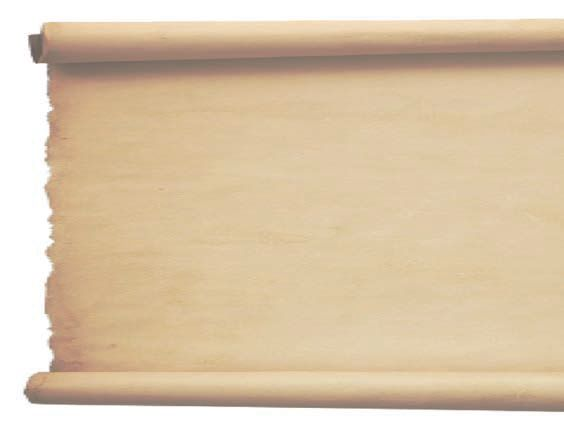<figcaption>Figure fig_ch02_p033_05 (Page 33)</figcaption></figure>
  <figure class="diagram-card" id="fig_ch02_p033_06"><figcaption>Figure fig_ch02_p033_06 (Page 33)</figcaption></figure>
  <figure class="diagram-card" id="fig_ch02_p033_07"><figcaption>Figure fig_ch02_p033_07 (Page 33)</figcaption></figure>
  <figure class="diagram-card" id="fig_ch02_p033_08"><figcaption>Figure fig_ch02_p033_08 (Page 33)</figcaption></figure>
  <figure class="diagram-card" id="fig_ch02_p033_09"><figcaption>Figure fig_ch02_p033_09 (Page 33)</figcaption></figure>
  <figure class="diagram-card" id="fig_ch02_p033_10"><figcaption>Figure fig_ch02_p033_10 (Page 33)</figcaption></figure>
  <div class="page-content">
    <p>f”ā‘cf„DzsšŽšȹā‘c</p>
    <p>Œ—šz†ˆ„āÇeƒ“šf„DzsšŽšȹāÇ
eŎśÆ sž}›¢ăÅų§ xÅă¡xƫ§ ‚œŽŒš†āÇ m}Úų
sš¢Ĺš‘c pų›ă Ƃ“Åśڝų sš¢Ĺš‘c Œ‚›Åų
“¡Ž Š—Œš†›Úsc ˆ›ŦƩsc Njŗ¢š¡} ¢sÇڝ
sc ¡xƮų›}¢Ĺš‘c “ċ››¡ ȼœsÇ –ǵ‚ũŽš›
zœ“›Úų sš¢Ĺš‘c ÷šŒā‘›c †uŽā‘›ŒǬ fŽš
†šāÇ †›†›Æڝų sš¢Ĺš‘c “Dz‚DzǙ “›”ǵš–
āÇ ˆ›Ŧ}Žų“ÅÚ§ e“›¡} –ǵ‚ũŒš› –ĕŽ›ÚšÄ
s’›ų›}¢Ĺš‘c e“Å Š—Œš†›Ú¡ƀ}ų sš¢Ĺš‘c
“ċ›†›†›Æڝc
n¢s„”c2300“Å•āÇڝŒƠ§Žx›Ú¡ƀĞŠŗՂ›š
̈́›v†›sšÎ›Æ “ċ› mų Žšȹ¡Ĺƀǯ› Œ—šz†ˆ„c 
ŠŗÄ ˆĚsšŽDzā‘š§ Œs‘›Æ ¡sš}Ĺ›Ž›Úų‚§
eښ¡Ĺ “ċ››¡ ‹Ž–Ƣ„šā¡‘ƀǯ› m¡ŦƽDZ
sšŽDzā‘š§g‚›Æ†›ų§†ŒÚ§e›šÄs’›ų‚§ ?
z</p>
    <p>sž}›¢ăÅų§xÅă¡xƫ§‚œŽŒš†āÇ£s¡sšĬ›Žų</p>
    <p>z
z
z
z</p>
    <p>ST-203-3-SOC. SCI-I (M)-9-VOL-1</p>
    <p>z</p>
    <p>Š›–›g fDZ †žǯšĬ›Æ gŦDz›Æ iĬš›Žų †›Ž“ ›
Žšȹā‘›Æpųš›Žų“ċ›hŽšȹā‘¡} ŽžˆœsŽc
mā¡†š›Žų¡“ų§ˆŽ›¢”š ›ÚDZ</p>
    <p>z†ˆ„āÇ
Íz†ˆ„cÎmųšÆz†c
e ›“–›ăǚc
mųš§eŃc‚œ
iˆ¢šu›ă§sš}sÇ
sśă§Օ››}ā‘c
‚šŒ–¢Œts‘c
Žžˆ¡ƀ}Ĺ›e“›¡}
z†āÇǚ›ŽŒš›
‚šŒ–›ăgā¡†
š§z†ˆ„ādž›
“›Æ“ų‚§ˆ›Æښ
¢“„ā‘›Æ“›“› 
z†ˆ„ā¡‘ˆǯ›
ˆŽšŒÅ”›ÚųĬ§</p>
    <p>¢“„sšvĞśÆ ¢ušŅ–Œž—“Dz“ǚš§ †›†›ų›Ž
ų‚§e“Íz†Îmųš§ e›¡ƀĞ‚§Օ›“DzšˆsŒš¢‚š¡}h¢ušŅ–Œž—āÇ
pŽ›}ŧǚ›ŽŒš›‚šŒ–›ÚšÄ‚}ā›g“Íz†ˆ„āÇÎmų›¡ƀН
z†ˆ„ā‘›¡sšÅ•›sŒ›¢ăšÆˆš„†csă“}ś¡źc†uŽā‘¡}c“‘Å㍛¢Ú§
†›ă să“}¢Ĺš¡}šƀc “Dz‚DzǙ sŽs”“ǙÚ‘¡} †›Åƣš¢sůā‘š›
†uŽāÇ Œš› gŎśǬ “Dz‚DzǙŒš –šƠśs Ƃ“Åņā¡‘ n¢sšˆ›ƀ›
ښ†c ⌡ƀ}Ĺš†c x›  †›ũāÇ f“›”DzŒš›Žų h ˆDžšĹĹ›Æ
¢ušŅā¡‘e}›ǚš†ŒšÚ›‹Ž“Dz“ǚeƂ‚Dz䌚›
ǢšÄ¢Å§-&lt;</p>
    <p>33</p>
  </div>
</section><section class="page-section" id="page-34">
  <div class="page-header"><span class="page-number">Page 34</span></div>
  <figure class="diagram-card" id="fig_ch02_p034_01"><figcaption>Figure fig_ch02_p034_01 (Page 34)</figcaption></figure>
  <figure class="diagram-card" id="fig_ch02_p034_02"><figcaption>Figure fig_ch02_p034_02 (Page 34)</figcaption></figure>
  <figure class="diagram-card" id="fig_ch02_p034_03"><figcaption>Figure fig_ch02_p034_03 (Page 34)</figcaption></figure>
  <figure class="diagram-card" id="fig_ch02_p034_04"><figcaption>Figure fig_ch02_p034_04 (Page 34)</figcaption></figure>
  <figure class="diagram-card" id="fig_ch02_p034_05"><figcaption>Figure fig_ch02_p034_05 (Page 34)</figcaption></figure>
  <figure class="diagram-card" id="fig_ch02_p034_06"><figcaption>Figure fig_ch02_p034_06 (Page 34)</figcaption></figure>
  <figure class="diagram-card" id="fig_ch02_p034_07"><figcaption>Figure fig_ch02_p034_07 (Page 34)</figcaption></figure>
  <figure class="diagram-card" id="fig_ch02_p034_08"><figcaption>Figure fig_ch02_p034_08 (Page 34)</figcaption></figure>
  <figure class="diagram-card" id="fig_ch02_p034_09"><figcaption>Figure fig_ch02_p034_09 (Page 34)</figcaption></figure>
  <figure class="diagram-card" id="fig_ch02_p034_10">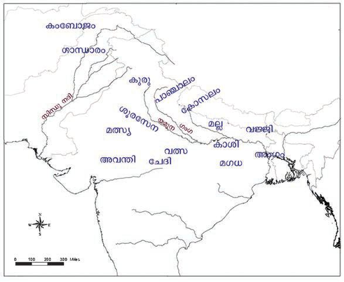<figcaption>Figure fig_ch02_p034_10 (Page 34)</figcaption></figure>
  <div class="page-content">
    <p>e Dzšc</p>
    <p>Օ›¢š}cŒĴ›¢†š}ŒǬg’ˆ›Ž›šĹŠŰcgښĹ§
“‘Åų“ų g‚§ e“Ž“Ž¡} Ƃ¢„”c mų sš’§xƀš}§
Žžˆ¡ƀ}Ĺ›gā¡†š§ŽšȹŽžˆœsŽcšƒšÅƒDzŒš›
†uŽāÇ
ŜÅų‚§ ŠŗՂ›š ÍecuĹŽ†›sšÎ›Æ gŎ
„œÅv†š‘¡ĹšŅ
śÆ †›“›Æ “ų 16 Žšȹā¡‘ƀǯ› ˆųĬ§ g“
s’›Ě§Šŗ†c”›•Dz
͌—šz†ˆ„āÇÎ mųš§ e›¡ƀĞ‚§ ¢ŒÆ “›“Ž›ă
†šf†ŭ†cs”›
Œšǯā¡‘ xŽ›ŅsšŽÅ ͎ĬDZ †uŽ“ÆڎcÎ mųš§
†uŽĹ›Æmś¢ăÅų
“›¢”•›ƀ›Úų‚§
†›Ž“ ›sšŽDzāÇ
–c–šŽ›ăsžĞśÆ
Šŗ¡ź†›Å“š“c
s}ų“ųsšĞ›†Ǭ›¡
ŒÃs}›sÇŒšŅŒǬ
s”›†uŽĹ›Æ“ă§
ŒŽ¡Ĺ“Ž›ÚŽ¡‚ųc
xƠŽšzê—Njš“Ǚ›
–š¢s‚s–šcŠ›
“šŽš–›‚}ā›
“›†uŽā‘š›Ž›
ځceŦDz”ǵš–Ĺ›
†š›‚›Ž¡Ě}¢ÚĬ
¡‚ųcf†ŭÄe‹›Ƃš
¡ƀНŠŗՂ›š
̈́›v†›sš›Î¡h
“›“ŽĹ›Æ†›ų§
m¡Ŧš¡ÚsšŽDzā‘š§
†›āÇŒ†ǡ›šÚ›‚§ ?</p>
    <p>34</p>
    <p>x“¡} ¡sš}Ĺ›Ž›Úų ‹žˆ}śÆ †›ų§ 16 Œ—šz†
ˆ„ā¡‘s¡ĬśˆĞ›s¡ƀ}Ĺs
‹žˆ}c
16Œ—šz†ˆ„āÇ</p>
    <p>e”§Œsc</p>
    <p>z</p>
    <p>z</p>
    <p>z</p>
    <p>z</p>
    <p>z</p>
    <p>z</p>
    <p>z</p>
    <p>z</p>
    <p>z</p>
    <p>z</p>
    <p>z</p>
    <p>z</p>
    <p>z</p>
    <p>z</p>
    <p>z</p>
    <p>z</p>
    <p>–šŒž—Dz”šȼc-</p>
  </div>
</section><section class="page-section" id="page-35">
  <div class="page-header"><span class="page-number">Page 35</span></div>
  <figure class="diagram-card" id="fig_ch02_p035_01"><figcaption>Figure fig_ch02_p035_01 (Page 35)</figcaption></figure>
  <figure class="diagram-card" id="fig_ch02_p035_02"><figcaption>Figure fig_ch02_p035_02 (Page 35)</figcaption></figure>
  <figure class="diagram-card" id="fig_ch02_p035_03"><figcaption>Figure fig_ch02_p035_03 (Page 35)</figcaption></figure>
  <figure class="diagram-card" id="fig_ch02_p035_04"><figcaption>Figure fig_ch02_p035_04 (Page 35)</figcaption></figure>
  <figure class="diagram-card" id="fig_ch02_p035_05">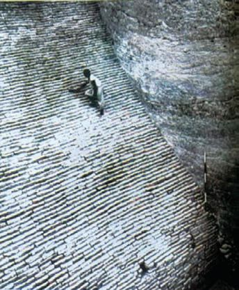<figcaption>Figure fig_ch02_p035_05 (Page 35)</figcaption></figure>
  <figure class="diagram-card" id="fig_ch02_p035_06"><figcaption>Figure fig_ch02_p035_06 (Page 35)</figcaption></figure>
  <div class="page-content">
    <p>f”ā‘cf„DzsšŽšȹā‘c</p>
    <p>Œ—šz†ˆ„ā‘›¡‹Ž–c“› š†c
–Œsš›sՂ›sÇŒ—šz†ˆ„ā‘›¡‹Ž–Ƣ„š
¡Ĺڝ›ă§ x› “›“ŽāÇ †ÆsųĬ§ eښĹ§
sšŽDz䌌š †›s‚›ˆ›Ž›“§ –Ƣ„š“c ǚ›Ž
£–†Dz“c †›“›Æ“ųˆš›‹š•›ÆŽx›Ú¡ƀĞ
÷Ūā‘›Æsšų͊›Îmųˆ„c†›s‚›¡š§
eьšÚų‚§ ͋šuÎ mų‚§ Œ¡ǯšŽ‚Žc †›s‚›š
›Žų š†DzāÇ sųsš›sÇ mų›“š›Žų
ŒtDzŒšc †›s‚›š› †Æs››Žų‚§ “†ā‘›Æ
‚šŒ–›ă›Žų“Å “†“›‹“āÇ †›s‚›š› †Æs›
¢ƀšÇ sŽs”¡Ĺš’›š‘›sÇ †›Dž›‚„›“–c
Žšzš“›†š›¢zš›¡xƫ
‹Ž†›Å“—Ĺ›†š› šŽš‘c i¢„DzšuǚÅ iĬš
›Žų ͔‚ˆƒƖšǦÎ mų Ղ››Æ Žšzš“›¡†
–—š›ă›Žų¢–†š†›ˆ¢Žš—›‚Ä÷šŒ›mų›
“¡ŽˆŽšŒÅ”›ÚųĬ§Œ—šz†ˆ„āÇÚ§¢sšĞs‘c
‚ǚš††uŽ›s‘ciĬš›Žų</p>
    <p>s–DZŠ››¡Œ‚›Æ “Ň
Œ—šz†ˆ„Ĺ›¡ź‚ǚš†c</p>
    <p>¢ušŅŽšȹœ“Dz“ǚ›Æ†›ų§Œ—šz†ˆ„ā‘›¢ÚǬ“‘Å㍝¡}
“›“› vĞāÇe“¡}–“›¢”•‚sÇmų›“s¡ĬśxÅă
¡xƮs</p>
    <p>Œu ¡}“‘Åă
ˆ‚›†š§ Œ—šz†ˆ„āÇ ‚ƣ›Æ e ›sšŽĹ›†¢“Ĭ› †›ŽŦŽc
ŗā‘›Æ nÅ¡ƀĞ›Žų g‚›Æ eŦ›ŒŒš› “›z›ă‚ Œu š
›Žų ‹žˆ}śÆ (1) †›ų§ Œu ¡} ǚš†c s¡Ĭŝs Œu 
gų¡Ĺ n‚§ –cǚš†Ĺ›Æ iÇ¡ƀ}ų Ƃ¢„”Œš›Žų¡“ų§
s¡ĬŚÄ–š ›Ú¢Œš?
†ƽ Œ’ ‹›Úų iƈš„†äŒ‚Ǭ Ƃ¢„”Œš›Žų Œu 
sž}š¡‚ šŽš‘cgŽƠ›Ž§†›¢äˆ“ciĬš›Žųe‚›†šÆiˆ
sŽāÇڝc f āÇڝc f“”DzŒš gŽƠ§ e“›¡}Ĺ¡ų
‹DzŒš› eښĹ§ ŗā‘›Æ f†sÇ Ƃ š† v}sŒš›Žų
Œu ›¡“†ā‘›Æf†sǍ¢ƒǐciĬš›Žųg‚§Œu ¡}
ŗ“›zc iƀšÚ› ucuc e‚›¡ź ¢ˆš•s†„›s‘c xŽÚ§
u‚šu‚–sŽDzāÇiƀ“ŽĹsc¡xƫŠ›cŠ›–šŽÄezš
‚”Ņ‚}ā›s’›“ǯ‹Žš ›sšŽ›s‘cŒu ›ÆiĬš›Žų</p>
    <p>Œu ›¡ Žšz“c”ā‘cƂ š†ŽšzšÚŶšŽc
</p>
    <p></p>
    <p>z</p>
    <p></p>
    <p></p>
    <p>z</p>
    <p></p>
    <p></p>
    <p>z</p>
    <p>—ŽDzÿŽšz“c”cŠ›cŠ›–šŽÄezš‚”Ņ
”›”†šuŽšz“c”c”›”†šuÄ
†ŭŽšz“c”cŒ—šˆŃ†ŭÄ
ǢšÄ¢Å§-&lt;</p>
    <p>35</p>
  </div>
</section><section class="page-section" id="page-36">
  <div class="page-header"><span class="page-number">Page 36</span></div>
  <figure class="diagram-card" id="fig_ch02_p036_01"><figcaption>Figure fig_ch02_p036_01 (Page 36)</figcaption></figure>
  <figure class="diagram-card" id="fig_ch02_p036_02"><figcaption>Figure fig_ch02_p036_02 (Page 36)</figcaption></figure>
  <figure class="diagram-card" id="fig_ch02_p036_03"><figcaption>Figure fig_ch02_p036_03 (Page 36)</figcaption></figure>
  <figure class="diagram-card" id="fig_ch02_p036_04"><figcaption>Figure fig_ch02_p036_04 (Page 36)</figcaption></figure>
  <figure class="diagram-card" id="fig_ch02_p036_05"><figcaption>Figure fig_ch02_p036_05 (Page 36)</figcaption></figure>
  <figure class="diagram-card" id="fig_ch02_p036_06"><figcaption>Figure fig_ch02_p036_06 (Page 36)</figcaption></figure>
  <figure class="diagram-card" id="fig_ch02_p036_07"><figcaption>Figure fig_ch02_p036_07 (Page 36)</figcaption></figure>
  <figure class="diagram-card" id="fig_ch02_p036_08"><figcaption>Figure fig_ch02_p036_08 (Page 36)</figcaption></figure>
  <figure class="diagram-card" id="fig_ch02_p036_09"><figcaption>Figure fig_ch02_p036_09 (Page 36)</figcaption></figure>
  <div class="page-content">
    <p>e Dzšc</p>
    <p>‹žŒ›”šȼ–“›¢”•‚sÇŒu ¡}“‘Å㍛ÆƂ š†
sšŽŒš›Žų¡“ų§  †›āÇ sŽ‚ų¢Ĭš ?mŦ
¡sšĬ§?</p>
    <p>Œu ›Æ†›ų§ŒŽDzŽšzDzś¢Ú§
Œu ›Æ“›“› Žšz“c”āÇ‹Žc†}ś›Žųe“›Æ†ŭ
“c”Ĺ›¡e“–š†¡Ĺ‹Žš ›sšŽ›š›Žų ††ŭ¡†ˆŽšz
¡ƀ}Ĺ›Š›–›g321ÆxůužŒŽDzÄŒŽDzŽšzDzcǚšˆ›ă
g‚§ Œ¢†š—ŽŒš“›†uŽŒš§h†uŽ¡ĹxǮ›“›¡šŽŒ‚›Ĭ§
g‚›†§64Ƃ¢“”†s“š}ā‘c šŽš‘c¢ušˆŽā‘ŒĬ§ŽĬcŒžųc †›s‘ǫ
“œ}sdž›Åƣ›ă›Ž›Úų‚§ ŒŽ“c¡x‘›ÚĞs‘ciˆ¢šu›ăš§Žšzš“›¡ź
¡sšĞšŽ“cŒŽc¡sšĬ§ †›Åƣ›ă‚š§
ŒŽDzŽšzDzś¡ź ‚ǚš†Œš ˆš}œˆŅc gų¡Ĺ ˆšǯ§†  †u
Ž¡Ĺڝ›ă§ ¡ŒuǙ†œ–§ mų ÷œÚ§ ŽšzƂ‚›†› ›¡} “›“Ž
Œš§ Œs‘›Æ†Æs››Ž›Úų‚§s}›DzÄm’‚›ÍeєšȻcÎ
e¢”šs xâ“Åś¡} ›t›‚āÇ eښĹ§ ƂxšŽĹ›Æ
iĬš›Žų †šāÇ ‚}ā›“ ŒŽDzŽšzDzś¡ź xŽ›Ņ
ˆ~†Ĺ›†–—š›Úų</p>
    <p>eєšȼ“c–žšcu–›ŗšŦ“c
ŒŽDzŽšzDz¡Ĺڝ›ă§“›“ŽāÇ
†Æsų Ƃ š† xŽ›Ņ¢Žt
sž}›š§ s}›DzÄ Žx›ă
eєšȼc £Œ–žŽ›¡ ˆŽš
“Ǚ ÷Ū”š“›‹šuś¡ź
‚“†š›Žų fÅ ”DzšŒ
”šȼ›Ú§ ‚ĕš“žŽ›¡ pŽ
ˆį›‚†›Æ†›ųš§ eєš
ȼś¡ź £s¡’ĹƂ‚›‹›ă‚§1907Æ”DzšŒ”šȼ›g‚§Ƃ–›ŗœsŽ›ăˆ‚›
†ĕ§e Dzšā‘š§hՂ›ÚǬ‚§n’v}sā‘›Æeƒ“š–žDZuā‘›Æ
jų›š§pŽŽšzDzc†›†›Æڝų¡‚ų§eєšȼśÆƂ‚›ˆš„›Úų
z –ǵšŒ›
 Žšzš“§
z ¢sš”c
 tz†š“§
z eŒš‚DzÅ  Œũ›ŒšÅ
z „į
 †œ‚›†Dzšc
z z†ˆ„c  ‹ž¢Œtcz†ā‘c
z Œ›Ņc
 –ǣ„ŽšzDzāÇ
z „Åuc
 ¢sšĞ¡sĞ›–cŽä›ăǚc</p>
    <p>36</p>
    <p>–šŒž—Dz”šȼc-</p>
  </div>
</section><section class="page-section" id="page-37">
  <div class="page-header"><span class="page-number">Page 37</span></div>
  <figure class="diagram-card" id="fig_ch02_p037_01"><figcaption>Figure fig_ch02_p037_01 (Page 37)</figcaption></figure>
  <figure class="diagram-card" id="fig_ch02_p037_02"><figcaption>Figure fig_ch02_p037_02 (Page 37)</figcaption></figure>
  <figure class="diagram-card" id="fig_ch02_p037_03"><figcaption>Figure fig_ch02_p037_03 (Page 37)</figcaption></figure>
  <figure class="diagram-card" id="fig_ch02_p037_04"><figcaption>Figure fig_ch02_p037_04 (Page 37)</figcaption></figure>
  <figure class="diagram-card" id="fig_ch02_p037_05">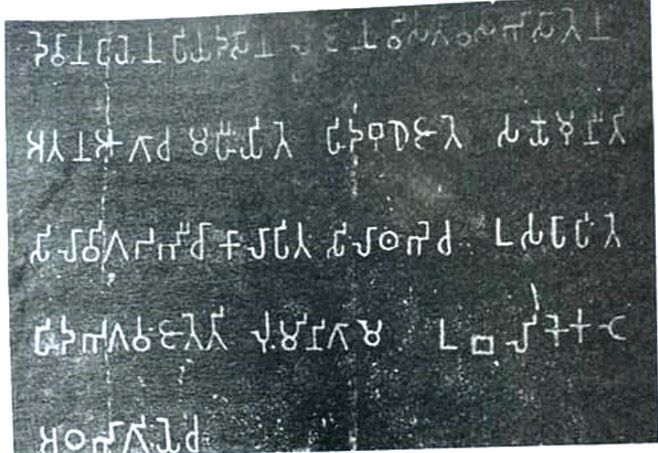<figcaption>Figure fig_ch02_p037_05 (Page 37)</figcaption></figure>
  <figure class="diagram-card" id="fig_ch02_p037_06"><figcaption>Figure fig_ch02_p037_06 (Page 37)</figcaption></figure>
  <figure class="diagram-card" id="fig_ch02_p037_07"><figcaption>Figure fig_ch02_p037_07 (Page 37)</figcaption></figure>
  <figure class="diagram-card" id="fig_ch02_p037_08"><figcaption>Figure fig_ch02_p037_08 (Page 37)</figcaption></figure>
  <figure class="diagram-card" id="fig_ch02_p037_09"><figcaption>Figure fig_ch02_p037_09 (Page 37)</figcaption></figure>
  <div class="page-content">
    <p>f”ā‘cf„DzsšŽšȹā‘c</p>
    <p>ŒŽDzŽšzDzś¡ nǯ“c Ƃ š† ‹Žš ›sšŽ› e¢”šs xâ“Å
śš›Žų e¢Ŕ—c s›cuc gų¡Ĺ pœ•  ‹žˆ}c 2
Njŗ›Ús f⌛ă§sœ’}ڛ¢‚š¡}ŒŽDzŽšzDzc“›”šŒš›s›cu
ŗš†ŦŽce¢”šsxâ“ÅśŗāÇi¢ˆä›ă‚š› ›t›‚
ā‘›Æ¢Žt¡ƀ}Ĺ››Ž›Úų</p>
    <p>Œ›Ä¢„› cŠ›†› ›t›‚c</p>
    <p>͊ŗ”šsDZŒ†› z†›ă h ǙĹ§ ¢„“š†šcˆ› ˆ›„–› s›Žœ} šŽĹ›†§
gŽˆ‚“Å•Ĺ›†¢”•c ¢†Ž›Ğ “ų§ fŽš ††}ś f ˆDZšŃš“§ z†›ă
ǙŒš§ g‚§ mų§ e››Úų‚›† ¢“Ĭ› g“›¡} sŽ›ÿÆ Œ‚››†šÆ
xǮ¡ƀĞ ǘžˆc Ǚšˆ›ă cŠ›†››ǫ f‘s¡‘ ͊›Î›Æ †›ų§ p’›“š
ڝsc e“Å “›‘“›¡ź mĞ›Æ pŽ ‹šuc ( 18 ) ŒšŅc ͋šuΌš› ¡sš}ĹšÆ
Œ‚›¡ųc ‚œŽŒš†›Úsc ¡xƪÎ
¢†ƀš‘›¡Œ›Ä¢„››¡ cŠ›†› ›t›‚“ce‚›¡źˆŽ›‹š•Œš§Œs‘›Æ
†Æs››Ž›Úų‚§</p>
    <p>h›t›‚Ĺ›Æ†›ų§ŒŽDzŽšzDz¡Ĺڝ›ă§m¡Ŧš¡ÚsšŽDzā
‘š§†›āÇŒ†ǡ›šÚ›‚§ ?</p>
    <p>z
z
z
z</p>
    <p>ǢšÄ¢Å§-&lt;</p>
    <p>37</p>
  </div>
</section><section class="page-section" id="page-38">
  <div class="page-header"><span class="page-number">Page 38</span></div>
  <figure class="diagram-card" id="fig_ch02_p038_01"><figcaption>Figure fig_ch02_p038_01 (Page 38)</figcaption></figure>
  <figure class="diagram-card" id="fig_ch02_p038_02"><figcaption>Figure fig_ch02_p038_02 (Page 38)</figcaption></figure>
  <figure class="diagram-card" id="fig_ch02_p038_03"><figcaption>Figure fig_ch02_p038_03 (Page 38)</figcaption></figure>
  <figure class="diagram-card" id="fig_ch02_p038_04"><figcaption>Figure fig_ch02_p038_04 (Page 38)</figcaption></figure>
  <figure class="diagram-card" id="fig_ch02_p038_05"><figcaption>Figure fig_ch02_p038_05 (Page 38)</figcaption></figure>
  <figure class="diagram-card" id="fig_ch02_p038_06">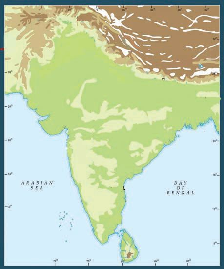<figcaption>Figure fig_ch02_p038_06 (Page 38)</figcaption></figure>
  <figure class="diagram-card" id="fig_ch02_p038_07"><figcaption>Figure fig_ch02_p038_07 (Page 38)</figcaption></figure>
  <figure class="diagram-card" id="fig_ch02_p038_08"><figcaption>Figure fig_ch02_p038_08 (Page 38)</figcaption></figure>
  <figure class="diagram-card" id="fig_ch02_p038_09"><figcaption>Figure fig_ch02_p038_09 (Page 38)</figcaption></figure>
  <figure class="diagram-card" id="fig_ch02_p038_10"><figcaption>Figure fig_ch02_p038_10 (Page 38)</figcaption></figure>
  <figure class="diagram-card" id="fig_ch02_p038_11"><figcaption>Figure fig_ch02_p038_11 (Page 38)</figcaption></figure>
  <figure class="diagram-card" id="fig_ch02_p038_12"><figcaption>Figure fig_ch02_p038_12 (Page 38)</figcaption></figure>
  <figure class="diagram-card" id="fig_ch02_p038_13"><figcaption>Figure fig_ch02_p038_13 (Page 38)</figcaption></figure>
  <figure class="diagram-card" id="fig_ch02_p038_14"><figcaption>Figure fig_ch02_p038_14 (Page 38)</figcaption></figure>
  <figure class="diagram-card" id="fig_ch02_p038_15"><figcaption>Figure fig_ch02_p038_15 (Page 38)</figcaption></figure>
  <figure class="diagram-card" id="fig_ch02_p038_16"><figcaption>Figure fig_ch02_p038_16 (Page 38)</figcaption></figure>
  <figure class="diagram-card" id="fig_ch02_p038_17">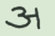<figcaption>Figure fig_ch02_p038_17 (Page 38)</figcaption></figure>
  <figure class="diagram-card" id="fig_ch02_p038_18"><figcaption>Figure fig_ch02_p038_18 (Page 38)</figcaption></figure>
  <figure class="diagram-card" id="fig_ch02_p038_19"><figcaption>Figure fig_ch02_p038_19 (Page 38)</figcaption></figure>
  <figure class="diagram-card" id="fig_ch02_p038_20">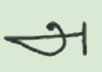<figcaption>Figure fig_ch02_p038_20 (Page 38)</figcaption></figure>
  <figure class="diagram-card" id="fig_ch02_p038_21"><figcaption>Figure fig_ch02_p038_21 (Page 38)</figcaption></figure>
  <figure class="diagram-card" id="fig_ch02_p038_22"><figcaption>Figure fig_ch02_p038_22 (Page 38)</figcaption></figure>
  <div class="page-content">
    <p>e Dzšc</p>
    <p>ŒŽDz‹Žc
e¢”šs›t›‚āÇ
e¢”šsxâ“Åś¢}
‚š šŽš‘c”›š›t›‚
āÇgŦDzÄiˆ‹žtį
ś¡ź“›“› ‹šuā‘›Æ
†›ų§‹›ă›ĞĬ§ƖšǦ›
t¢Žšǐ›eŽšŒ›s§›ˆ›s‘›
š§g“Žx›ă›ĞǬ‚§
e¢”šs›t›‚āÇf„Dz
Œš›“š›ă‚§1838Æ
Ɩ›Ğœ•sšŽ†š¡z›c–§
Ƃ›Ä¡–ƀ§f§‹žŽ›‹šuc
›t›‚ā‘›cÍ¢„“š†šc
ˆ›Î ¢„“ŶšÅÚ§ Ƃ›¡ƀ
Ğ“Ä mųš§Žšzš“›¡†
ˆŽšŒÅ”›ă›Ž›Úų‚§
mųšÆsÅĴš}s›¡
Œšǘ›i¢„u‘c†›ĞžÅmų›
“›}ā‘›¡›t›‚ā‘›Æ
Íe¢”šsÎmų¢ˆŽ§sššc</p>
    <p>f †›sgŦDz›Æiˆ
¢šu›Úų‹žŽ›‹šuc
›t›‚‹š•s‘cƖšǦ›
›ˆ››Æ†›ų§Žžˆ¡ƀĞ
‚š§</p>
    <p>ŒŽDzŽšzDzc “›”šŒš›Žų¡“ų§ sĬ¢ƽš g†›
†ŒÚ§  e“Ž¡} ‹Ž–c“› š†c mā¡†š›Žų
¡“ų§¢†šÚDZ
‹Ž–sŽDzś†š›†ƣ¡} ŽšzDz¡Ĺ “›“› –cǚš
† ā ‘š ›  “› ‹ z› ă› Ğ Ĭ ¢ƽš   Œš Ņ Œ ƽ  –c ǚš †
ā Ç ¡Ú ƽDZ  ‚  ǚš † ā ‘ Œ Ĭ§   Œ ŽDz Žš zDz “c
gŎśÆ “›“›  Ƃ“›”Dzs‘š› “›‹z›ă›Žų
gŎc Ƃ“›”DzsÇ u“ÅĴŌšŽ¡} †›ũĹ›Ä
sœ’›š›Žų ‚ǚš†Œš ˆš}œˆŅc xâ“Åś
¡} ¢†Ž›ĞǬ†›ũĹ›š›Žų
‹žˆ}c 2Æ †›ų§ Ƃ“›”Dzš ‚ǚš
†āÇ s¡Ĭś ˆĞ›s ˆžÅśš
ڝs
‹žˆ}c
‚ä”›</p>
    <p>ˆš}œˆŅc
iċ›†›</p>
    <p>ƖšǦ›
—›ŭ›</p>
    <p>s</p>
    <p>›cu</p>
    <p>c</p>
    <p>–“Łu›Ž›</p>
    <p>Šcuš‘›
Œš‘c
‚Œ›’§</p>
    <p>Ƃ“›”Dzš‚ǚš†āÇ
ŽšzDz‚ǚš†c</p>
    <p>38</p>
    <p>–šŒž—Dz”šȼc-</p>
    <p>¡‚š”š›</p>
  </div>
</section><section class="page-section" id="page-39">
  <div class="page-header"><span class="page-number">Page 39</span></div>
  <figure class="diagram-card" id="fig_ch02_p039_01"><figcaption>Figure fig_ch02_p039_01 (Page 39)</figcaption></figure>
  <figure class="diagram-card" id="fig_ch02_p039_02"><figcaption>Figure fig_ch02_p039_02 (Page 39)</figcaption></figure>
  <figure class="diagram-card" id="fig_ch02_p039_03"><figcaption>Figure fig_ch02_p039_03 (Page 39)</figcaption></figure>
  <figure class="diagram-card" id="fig_ch02_p039_04"><figcaption>Figure fig_ch02_p039_04 (Page 39)</figcaption></figure>
  <figure class="diagram-card" id="fig_ch02_p039_05"><figcaption>Figure fig_ch02_p039_05 (Page 39)</figcaption></figure>
  <figure class="diagram-card" id="fig_ch02_p039_06"><figcaption>Figure fig_ch02_p039_06 (Page 39)</figcaption></figure>
  <figure class="diagram-card" id="fig_ch02_p039_07"><figcaption>Figure fig_ch02_p039_07 (Page 39)</figcaption></figure>
  <figure class="diagram-card" id="fig_ch02_p039_08"><figcaption>Figure fig_ch02_p039_08 (Page 39)</figcaption></figure>
  <figure class="diagram-card" id="fig_ch02_p039_09"><figcaption>Figure fig_ch02_p039_09 (Page 39)</figcaption></figure>
  <figure class="diagram-card" id="fig_ch02_p039_10"><figcaption>Figure fig_ch02_p039_10 (Page 39)</figcaption></figure>
  <figure class="diagram-card" id="fig_ch02_p039_11"><figcaption>Figure fig_ch02_p039_11 (Page 39)</figcaption></figure>
  <figure class="diagram-card" id="fig_ch02_p039_12"><figcaption>Figure fig_ch02_p039_12 (Page 39)</figcaption></figure>
  <figure class="diagram-card" id="fig_ch02_p039_13"><figcaption>Figure fig_ch02_p039_13 (Page 39)</figcaption></figure>
  <figure class="diagram-card" id="fig_ch02_p039_14"><figcaption>Figure fig_ch02_p039_14 (Page 39)</figcaption></figure>
  <figure class="diagram-card" id="fig_ch02_p039_15"><figcaption>Figure fig_ch02_p039_15 (Page 39)</figcaption></figure>
  <div class="page-content">
    <p>f”ā‘cf„DzsšŽšȹā‘c</p>
    <p>¡‚ÚÄƂ“›”Dz
ˆ}›ĚšÄƂ“›”Dz
“}ÚÄƂ“›”Dz
s›’ÚÄƂ“›”Dz
ŒŽDzŶšŽ¡}£–†Dzś†§eĕ“›‹šuāÇiĬš›ŽųsššÇƀ}
s‚›Žƀ} ¢‚Ž§ uz¢–† †š“›s¢–† mų›“š›Žų e“
£–†›s ‹ŽĹ›¡ź xŒ‚ 30 ecuā‘Ǭ –Œ›‚›š§
†›Å“—›ă›Žų‚§
‚¡źƂzsÇڛ}›Æ–—“Åś‚ǵ“c–Œš š†“c†›†›ÅŚÄ
e¢”šs xâ“Åś ƂxŽ›ƀ›ă f”āÇ Íe¢”šs ƣÎ Åƣ 
mų›¡ƀ}ųe¢”šs¡ź”š–†ā‘›Æ†›ųš§†ƣÇg‚›¡†
ڝ›ă§Œ†ǡ›šÚ›‚§
e¢”šs ƣ›¡Ƃ š†f”āÇ‚š¡’¡Úš}Ĺ›Ž›Úų
Œǯ§Œ‚“›”ǵš–›s¢‘š}§–—›ǒ‚sš›Ús</p>
    <p>e¢”šs ƣ
Åƣ</p>
    <p>Œ‚›Åų“¡ŽcuŽÚŶš¡ŽcŠ—Œš†›Ús</p>
    <p>e}›Œs¢‘š}c¢Žšu›s¢‘š}c„sš›Ús</p>
    <p>“›”šŒšŽšzDzś¡źsšŽDz䌌š‹ŽĹ›†c“›“› 
–šŒž—›s“›‹šuā¡‘ ¢šz›ƀ›ă§ †›Åŝų‚›†c
¢“Ĭ›Ǭ †Œš›Žų e¢”šs ƣ¡ų§  ƂŒt
xŽ›ŅsšŽ›š ¡šŒ›  ƒšˆÅ e‹›Ƃš¡ƀ}ų
gų¡Ĺ gŦDzÄ ‹Ž–c“› š†Ĺ›¡
n¡‚š¡Ú –“›¢”•‚sÇ ŒŽDz‹Ž
–Ƣ„šĹ›Æ sššÄ s’›c xÅă
¡xƫ§ ‚šŽ‚ŒDz¡ƀ}Ĺs</p>
    <p>¡šŒ›ƒšˆÅ</p>
    <p>ǢšÄ¢Å§-&lt;</p>
    <p>39</p>
  </div>
</section><section class="page-section" id="page-40">
  <div class="page-header"><span class="page-number">Page 40</span></div>
  <figure class="diagram-card" id="fig_ch02_p040_01"><figcaption>Figure fig_ch02_p040_01 (Page 40)</figcaption></figure>
  <figure class="diagram-card" id="fig_ch02_p040_02"><figcaption>Figure fig_ch02_p040_02 (Page 40)</figcaption></figure>
  <figure class="diagram-card" id="fig_ch02_p040_03"><figcaption>Figure fig_ch02_p040_03 (Page 40)</figcaption></figure>
  <figure class="diagram-card" id="fig_ch02_p040_04"><figcaption>Figure fig_ch02_p040_04 (Page 40)</figcaption></figure>
  <figure class="diagram-card" id="fig_ch02_p040_05"><figcaption>Figure fig_ch02_p040_05 (Page 40)</figcaption></figure>
  <figure class="diagram-card" id="fig_ch02_p040_06"><figcaption>Figure fig_ch02_p040_06 (Page 40)</figcaption></figure>
  <figure class="diagram-card" id="fig_ch02_p040_07"><figcaption>Figure fig_ch02_p040_07 (Page 40)</figcaption></figure>
  <figure class="diagram-card" id="fig_ch02_p040_08"><figcaption>Figure fig_ch02_p040_08 (Page 40)</figcaption></figure>
  <figure class="diagram-card" id="fig_ch02_p040_09"><figcaption>Figure fig_ch02_p040_09 (Page 40)</figcaption></figure>
  <figure class="diagram-card" id="fig_ch02_p040_10"><figcaption>Figure fig_ch02_p040_10 (Page 40)</figcaption></figure>
  <figure class="diagram-card" id="fig_ch02_p040_11"><figcaption>Figure fig_ch02_p040_11 (Page 40)</figcaption></figure>
  <figure class="diagram-card" id="fig_ch02_p040_12"><figcaption>Figure fig_ch02_p040_12 (Page 40)</figcaption></figure>
  <figure class="diagram-card" id="fig_ch02_p040_13"><figcaption>Figure fig_ch02_p040_13 (Page 40)</figcaption></figure>
  <figure class="diagram-card" id="fig_ch02_p040_14"><figcaption>Figure fig_ch02_p040_14 (Page 40)</figcaption></figure>
  <figure class="diagram-card" id="fig_ch02_p040_15"><figcaption>Figure fig_ch02_p040_15 (Page 40)</figcaption></figure>
  <figure class="diagram-card" id="fig_ch02_p040_16"><figcaption>Figure fig_ch02_p040_16 (Page 40)</figcaption></figure>
  <figure class="diagram-card" id="fig_ch02_p040_17"><figcaption>Figure fig_ch02_p040_17 (Page 40)</figcaption></figure>
  <figure class="diagram-card" id="fig_ch02_p040_18">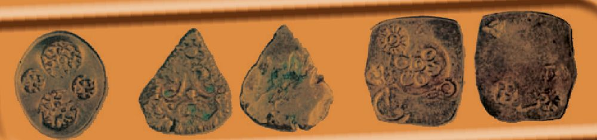<figcaption>Figure fig_ch02_p040_18 (Page 40)</figcaption></figure>
  <figure class="diagram-card" id="fig_ch02_p040_19"><figcaption>Figure fig_ch02_p040_19 (Page 40)</figcaption></figure>
  <figure class="diagram-card" id="fig_ch02_p040_20">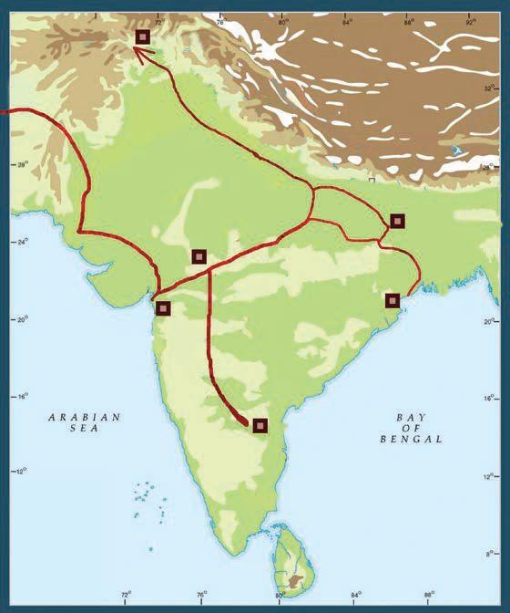<figcaption>Figure fig_ch02_p040_20 (Page 40)</figcaption></figure>
  <div class="page-content">
    <p>e Dzšc</p>
    <p>să“}ś¡ź“‘Åă
gŦDz›Æ ƂxšŽĹ›Ĭš›Žų f„Dzsš †šā‘š§
x›ŅśÆ sšų‚§ g“ Œŝšÿ›‚ †šāÇ (Punch Marked
Coins) mų›¡ƀ}ų¡“Ǭ››c¡xƠ›Œš§ g“†›Åƣ›ă›Ž›
ڝų‚§ să“}ś†š› †šāÇ iˆ¢šu›ă›Žų mų‚›†§
¡‚‘›“š›“
‚ä”›</p>
    <p>‹žˆ}c</p>
    <p>ˆš}œˆŅ</p>
    <p>iċ›†›</p>
    <p>sŽ“’›c s}Ɠ’›c †„›sÇ
“’›c –š †āÇ ¡sšĬ¢ˆš
›Žų
š†DzāÇ ‚›Ĺ
ŽāÇ ¢š—c ‚}ā›“š
›Žų Ƃ š† să“}“ǙÚÇ
eښ¡Ĺ ˆǙsā‘›ÆˆŽšŒÅ
”›ÚųÍ¢–ŧΠ͖šĹ“š—sÅÎ
mųœˆ„āÇsă“}ښ¡Žš§
–žx›ƀ›Úų‚§</p>
    <p>‚šƤ›ž›</p>
    <p>¢Ɩšă§</p>
    <p>–“Łu›Ž›</p>
    <p>‹ž ˆ }c  †› Žœ ä› ă§
n¡‚š¡ÚƂ¢„”ā
‘›ž¡}š§să“}c
†}ų¡‚ų§s¡Ĭś¢Žt
¡ƀ}Ĺs</p>
    <p>gŦDzÄ iˆ‹žtįśÆ Œ—šz
†ˆ„āÇ Žžˆc¡sšĬ ˆDžšĹ
“c e‚§  ˆ›ųœ}§  ŒŽDzŽšzDz
Œš› ˆŽ›Œ›ă sšŽDzā‘Œš¢ƽš g‚“¡Ž xÅă¡xƫ‚§ e¢‚
sšĹ§ –Œš†Œš ŽšȹœŒšǯāÇÚ§ –šäDzc“—›ă Œ¡ǯšŽ¢Œt
¡‚ڝs›’Účž¢šƀ›¡÷œ–§f›Žų</p>
    <p>40</p>
    <p>–šŒž—Dz”šȼc-</p>
  </div>
</section><section class="page-section" id="page-41">
  <div class="page-header"><span class="page-number">Page 41</span></div>
  <figure class="diagram-card" id="fig_ch02_p041_01"><figcaption>Figure fig_ch02_p041_01 (Page 41)</figcaption></figure>
  <figure class="diagram-card" id="fig_ch02_p041_02"><figcaption>Figure fig_ch02_p041_02 (Page 41)</figcaption></figure>
  <figure class="diagram-card" id="fig_ch02_p041_03"><figcaption>Figure fig_ch02_p041_03 (Page 41)</figcaption></figure>
  <figure class="diagram-card" id="fig_ch02_p041_04"><figcaption>Figure fig_ch02_p041_04 (Page 41)</figcaption></figure>
  <figure class="diagram-card" id="fig_ch02_p041_05">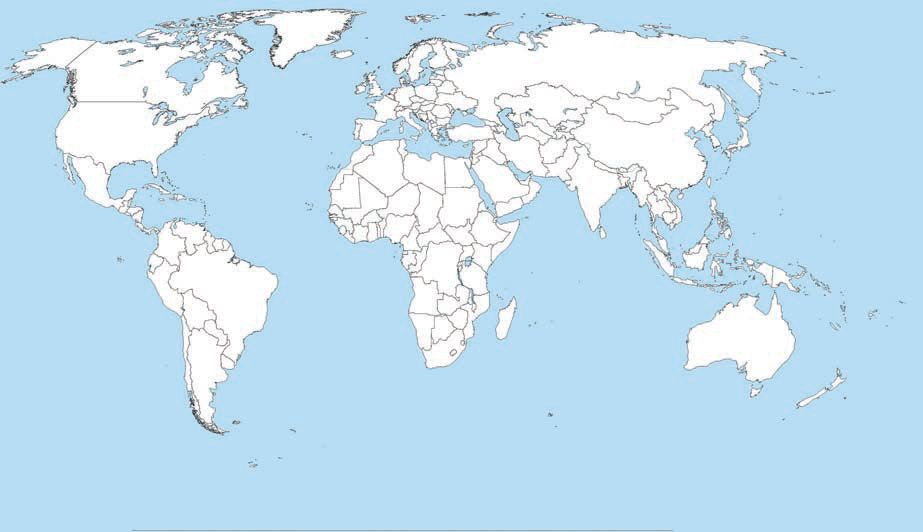<figcaption>Figure fig_ch02_p041_05 (Page 41)</figcaption></figure>
  <figure class="diagram-card" id="fig_ch02_p041_06">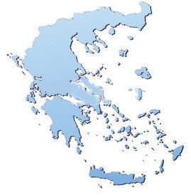<figcaption>Figure fig_ch02_p041_06 (Page 41)</figcaption></figure>
  <div class="page-content">
    <p>f”ā‘cf„DzsšŽšȹā‘c</p>
    <p>ŽšȹŽžˆœsŽc÷œ–›Æ
x“¡}†Æs››Ž›Úų‹žˆ}śÆ†›ų§÷œ–›¡źǚš†cs¡ĬŞ</p>
    <p>‹žˆ}c</p>
    <p>¡sš›Ŧ§</p>
    <p>÷œ–§</p>
    <p>‚œŠ§–§
n‚Ä–§</p>
    <p>ǝšÅĞ</p>
    <p>÷œ–›Æ ¡ˆš‚–ŽäƩc ‹ŽĹ›†Œš› ÷šŒāÇ pų›ă†›ų
e“ †uŽŽšȹāÇ mų›¡ƀН pŽ †uŽ“c xǯŒǬ sšÅ•›s
÷šŒā‘ciÇ¡ƀĞ‚š›ŽųpŽ†uŽŽšȹcsųs‘cˆÅ“‚ā‘c
h†uŽŽšȹāÇÚ§ƂՂ›„ĹŒše‚›ÅśsdžÆs›x›†uŽ
ŽšȹāÇ „ǵœˆs‘š›Žų iÅų sųsÇÚ§ Œœ¡‚š›Žų
†uŽŽšȹā‘¡} ‚ǚš†c n‚Ä–§ ǝšÅĞ ¡sš›Ŧ§ ‚œŠ§–§
mų›“š›Žų÷œ–›¡Ƃ š††uŽŽšȹāÇ</p>
    <p>z†š ›ˆ‚Dz“’››¡n‚Ä–§
ŽĬš›ŽĹ› e̞“Å•āÇÚ§ ŒƠ§ ÷œ–›¡ n‚Ä–›Æ
†›†›ų›Žų ‹Ž–Ƣ„šc f †›s z†š ›ˆ‚Dz¢Ĺš}§ –šŒDz
ŒǬ pųš›Žų g‚§ Œǯ †uŽŽšȹā‘›¡ ‹ŽŽœ‚››Æ †›ų§
“Dz‚DzǙŒš›Žųe}›ŒsÇeƽšĹ 30“ǡǬmƽšˆŽ•Ŷš
¡ŽcˆŽŶšŽš›sÚšÚ››ŽųhˆŽŶšÅiÇ¡ƀĞpŽ
ǢšÄ¢Å§-&lt;</p>
    <p>41</p>
  </div>
</section><section class="page-section" id="page-42">
  <div class="page-header"><span class="page-number">Page 42</span></div>
  <figure class="diagram-card" id="fig_ch02_p042_01"><figcaption>Figure fig_ch02_p042_01 (Page 42)</figcaption></figure>
  <figure class="diagram-card" id="fig_ch02_p042_02"><figcaption>Figure fig_ch02_p042_02 (Page 42)</figcaption></figure>
  <figure class="diagram-card" id="fig_ch02_p042_03"><figcaption>Figure fig_ch02_p042_03 (Page 42)</figcaption></figure>
  <figure class="diagram-card" id="fig_ch02_p042_04"><figcaption>Figure fig_ch02_p042_04 (Page 42)</figcaption></figure>
  <figure class="diagram-card" id="fig_ch02_p042_05"><figcaption>Figure fig_ch02_p042_05 (Page 42)</figcaption></figure>
  <figure class="diagram-card" id="fig_ch02_p042_06"><figcaption>Figure fig_ch02_p042_06 (Page 42)</figcaption></figure>
  <figure class="diagram-card" id="fig_ch02_p042_07"><figcaption>Figure fig_ch02_p042_07 (Page 42)</figcaption></figure>
  <figure class="diagram-card" id="fig_ch02_p042_08"><figcaption>Figure fig_ch02_p042_08 (Page 42)</figcaption></figure>
  <figure class="diagram-card" id="fig_ch02_p042_09"><figcaption>Figure fig_ch02_p042_09 (Page 42)</figcaption></figure>
  <figure class="diagram-card" id="fig_ch02_p042_10"><figcaption>Figure fig_ch02_p042_10 (Page 42)</figcaption></figure>
  <figure class="diagram-card" id="fig_ch02_p042_11"><figcaption>Figure fig_ch02_p042_11 (Page 42)</figcaption></figure>
  <figure class="diagram-card" id="fig_ch02_p042_12"><figcaption>Figure fig_ch02_p042_12 (Page 42)</figcaption></figure>
  <figure class="diagram-card" id="fig_ch02_p042_13"><figcaption>Figure fig_ch02_p042_13 (Page 42)</figcaption></figure>
  <figure class="diagram-card" id="fig_ch02_p042_14"><figcaption>Figure fig_ch02_p042_14 (Page 42)</figcaption></figure>
  <figure class="diagram-card" id="fig_ch02_p042_15"><figcaption>Figure fig_ch02_p042_15 (Page 42)</figcaption></figure>
  <figure class="diagram-card" id="fig_ch02_p042_16"><figcaption>Figure fig_ch02_p042_16 (Page 42)</figcaption></figure>
  <div class="page-content">
    <p>e Dzšc</p>
    <p>–Œ›‚›š›ŽųƂ š†sšŽDzā‘›Æ‚œŽŒš†c£s¡sšĬ›Žų‚§
g‚›†š› “Å•Ĺ›Æ †š‚“ g“Å ¢šuc ¢xÅų›Žų
ȼœsÇ sŽs”¡Ĺš’›š‘›sÇ să“}ښŽš› Ƃ“Åś㛎ų
“›¢„”›sÇ‚}ā›“¡ŽˆŽŽš›sÚšÚ››Žų›ƽ</p>
    <p>Œ Dz ŽDzš’› (Mediterranean sea) Ƃ¢„”¡Ĺ să“}ś¡ź Ƃ š†¢sůc mų
†››Æ n‚Ä–§ –ƠųŒš †uŽŽšȹŒš›Žų sƀÆ †›ÅƣšĹ›c
s}ƍšŅ›c£“„u§ DzŒǬ†›Ž“ ›¢ˆÅn‚Ä–›ÆiĬš›Žų–Œœˆ
Ƃ¢„”ā‘›Æ †›ŽŦŽc –ĕŽ›ă g“Å ˆĹÄ f”ā¡‘c £†ˆ›
s¡‘c –ǵœsŽ›ă Œǯ§ Ƃ¢„”ā‘›Æ †›ų§ †›Ž“ › x›ŦsÅ n‚Ä–›¢Ú§
fsŕ›Ú¡ƀН ¢–š‰›ǢsÇ mųš§ g“Å e›¡ƀĞ‚§ gŎśÆ
n‚Ä–›Æmś¢ăÅųx›ŦsŽ›ÆpŽš‘š§ xŽ›Ņś¡źˆ›‚š“š›s
ښڝų¡—¢š¢šĞ–§</p>
    <p>n‚Ä–›¡ ‹Ž–c“› š†c f †›s z†š ›ˆ
‚DzśÆ†›ų§n¡‚š¡ÚsšŽDzā‘›Æ“Dz‚DzǙŒš›
Žų?</p>
    <p>Œ—šz†ˆ„ā¡‘c÷œ–›¡†uŽŽšȹā¡‘c
‚ƣ›Æ‚šŽ‚ŒDzc ¡xƮs</p>
    <p>Š›–›g fšc †žǯšĬ§ xŽ›ŅśÆ –Ƃ š†Œš ŒšǯāÇÚ§
–šäDzc“—›ă sšŒš›Žųz†zœ“›‚Ĺ›¡ź “›“› ¢Œts‘›Æ
eښĹ§  Œšǯā‘Ĭš› ‹‚›szœ“›‚Ĺ›¡ ŒšǯāÇ Žšȹœ
Žcuŝc x›ŦšŒįĹ›cƂ‚›‰›ăeā¡†š§eښĹ§
ˆĹÄ f”āÇ Žžˆ¡ƀĞ‚§  g“  ˆ›Æښ Œš†“xŽ›Ņ¡Ĺ
†›ÅĴšsŒš›–ǵš œ†›Úsc ¡xƫ›ĞĬ§</p>
    <p>42</p>
    <p>–šŒž—Dz”šȼc-</p>
  </div>
</section><section class="page-section" id="page-43">
  <div class="page-header"><span class="page-number">Page 43</span></div>
  <figure class="diagram-card" id="fig_ch02_p043_01"><figcaption>Figure fig_ch02_p043_01 (Page 43)</figcaption></figure>
  <figure class="diagram-card" id="fig_ch02_p043_02"><figcaption>Figure fig_ch02_p043_02 (Page 43)</figcaption></figure>
  <figure class="diagram-card" id="fig_ch02_p043_03"><figcaption>Figure fig_ch02_p043_03 (Page 43)</figcaption></figure>
  <figure class="diagram-card" id="fig_ch02_p043_04"><figcaption>Figure fig_ch02_p043_04 (Page 43)</figcaption></figure>
  <figure class="diagram-card" id="fig_ch02_p043_05"><figcaption>Figure fig_ch02_p043_05 (Page 43)</figcaption></figure>
  <figure class="diagram-card" id="fig_ch02_p043_06"><figcaption>Figure fig_ch02_p043_06 (Page 43)</figcaption></figure>
  <figure class="diagram-card" id="fig_ch02_p043_07"><figcaption>Figure fig_ch02_p043_07 (Page 43)</figcaption></figure>
  <figure class="diagram-card" id="fig_ch02_p043_08"><figcaption>Figure fig_ch02_p043_08 (Page 43)</figcaption></figure>
  <figure class="diagram-card" id="fig_ch02_p043_09"><figcaption>Figure fig_ch02_p043_09 (Page 43)</figcaption></figure>
  <figure class="diagram-card" id="fig_ch02_p043_10"><figcaption>Figure fig_ch02_p043_10 (Page 43)</figcaption></figure>
  <figure class="diagram-card" id="fig_ch02_p043_11"><figcaption>Figure fig_ch02_p043_11 (Page 43)</figcaption></figure>
  <figure class="diagram-card" id="fig_ch02_p043_12"><figcaption>Figure fig_ch02_p043_12 (Page 43)</figcaption></figure>
  <div class="page-content">
    <p>f”ā‘cf„DzsšŽšȹā‘c</p>
    <p>Š›–›gfšc†žǯšĬ§</p>
    <p>‹‚›sŽcu¡ĹŒšǯāÇ</p>
    <p>f” šŽ›¡ŒšǯāÇ</p>
    <p>ŠŗŒ‚c</p>
    <p>£z†Œ‚c</p>
    <p>‹‚›s“š„c</p>
    <p>gŽƠ§iˆsŽā‘¡}
iˆ¢šuc</p>
    <p>sšÅ•›sˆ¢Žšu‚›</p>
    <p>ŽšȹŽžˆœsŽc</p>
    <p>z†ˆ„āÇ</p>
    <p>÷œ–›¡†uŽ
ŽšȹāÇ</p>
    <p>Œ›¢ăšÆˆš„†c
Œ—šz†ˆ„āÇ
es§–šĬ¡}
–šƤšzDzc</p>
    <p>să“}c
Œu
†uŽāÇ
ŒŽDzŽšzDzc</p>
    <p>ǢšÄ¢Å§-&lt;</p>
    <p>43</p>
  </div>
</section><section class="page-section" id="page-44">
  <div class="page-header"><span class="page-number">Page 44</span></div>
  <figure class="diagram-card" id="fig_ch02_p044_01"><figcaption>Figure fig_ch02_p044_01 (Page 44)</figcaption></figure>
  <figure class="diagram-card" id="fig_ch02_p044_02"><figcaption>Figure fig_ch02_p044_02 (Page 44)</figcaption></figure>
  <figure class="diagram-card" id="fig_ch02_p044_03"><figcaption>Figure fig_ch02_p044_03 (Page 44)</figcaption></figure>
  <figure class="diagram-card" id="fig_ch02_p044_04"><figcaption>Figure fig_ch02_p044_04 (Page 44)</figcaption></figure>
  <figure class="diagram-card" id="fig_ch02_p044_05"><figcaption>Figure fig_ch02_p044_05 (Page 44)</figcaption></figure>
  <figure class="diagram-card" id="fig_ch02_p044_06"><figcaption>Figure fig_ch02_p044_06 (Page 44)</figcaption></figure>
  <div class="page-content">
    <p>e Dzšc</p>
    <p>‚}ÅƂ“ÅņāÇ
z</p>
    <p>z</p>
    <p>z</p>
    <p>Š›–›g 6šc†žǯšĬ›Æˆ‚›f”āÇƂxŽ›ƀ›ăx›ŦsŽ¡}zœ“›‚¡Ĺ
fǝ„ŒšÚ› v zœ“xŽ›ŅˆǙsc ‚ƮššÚs x›ŅāÇ iÇ¡ƀ}Ĺ› e“
Œ¢†š—ŽŒšÚs
‘z†ˆ„āÇŒ‚ÆŒŽDzŽšzDzc“¡ŽÎmų“›•Ĺ›Æ‹žˆ}āÇiÇ¡ƀ}Ĺ›pŽ
›z›ǯÆƂ–¢ź•Ä‚ƮššÚs

Íf”</p>
    <p>šŽs‘c ŽšȹŽžˆœsŽ“cÎ mų “›•Ĺ›Æ pŽ Ƃ¢ljšĹŽ› –cv}›</p>
    <p>ƀ›Ús</p>
    <p>44</p>
    <p>–šŒž—Dz”šȼc-</p>
  </div>
</section><section class="page-section" id="page-45">
  <div class="page-header"><span class="page-number">Page 45</span></div>
  <figure class="diagram-card" id="fig_ch02_p045_01"><figcaption>Figure fig_ch02_p045_01 (Page 45)</figcaption></figure>
  <figure class="diagram-card" id="fig_ch02_p045_02"><figcaption>Figure fig_ch02_p045_02 (Page 45)</figcaption></figure>
  <figure class="diagram-card" id="fig_ch02_p045_03"><figcaption>Figure fig_ch02_p045_03 (Page 45)</figcaption></figure>
  <figure class="diagram-card" id="fig_ch02_p045_04"><figcaption>Figure fig_ch02_p045_04 (Page 45)</figcaption></figure>
  <figure class="diagram-card" id="fig_ch02_p045_05"><figcaption>Figure fig_ch02_p045_05 (Page 45)</figcaption></figure>
  <figure class="diagram-card" id="fig_ch02_p045_06"><figcaption>Figure fig_ch02_p045_06 (Page 45)</figcaption></figure>
  <figure class="diagram-card" id="fig_ch02_p045_07"><figcaption>Figure fig_ch02_p045_07 (Page 45)</figcaption></figure>
  <div class="page-content">
    <p>3</p>
    <p>‹žŒ›„š†“c
gŦDzÄ–Œž—“c</p>
    <p>“sš}sŒ—šŽšzš“§Njœ“›ŰDz”Þ›ŽĬšŒ¡źsƺ†ƂsšŽc
“›z“c„œÅvšǡcg—ˆŽ¢šsā‘›Æ¢äŒ–Œš š†ā‘c£s“Žų‚›
†š› h ÷šŒĹ›¡ź ˆs‚› †šc ƖšǦÅÚ§ „š†Œš› †Æsų x‚Å¢“„
ā‘šc ŒÄŽšzšÚŶšŽšc ecuœsŽ›Ú¡ƀĞ fxšŽƂsšŽŒǬ p’›“sÇ
h‹žŒ›„š†Ĺ›†cŠš sŒš›Ž›Úų‚š§e“g‚ŽƂ¢„”āÇ¢ˆš¡ƽ
g“›¡} ‹Žc iƀc Œ„Dz“c jǯ›¡}ÚŽ‚§ Žšzsœ tz†š“›¢Ú§ ˆ¢Œš
‹äDz š†Dzā¢‘š p}¢ÚĬ‚›ƽ Žšzš“›†š› ˆžÚ¢‘š ˆš¢š †Æ¢sĬ‚›ƽ
i¢„DzšuǚÅÚ§ ˆ”“›¡†¢š sš‘¡¢š †Æ¢sĬ Žšȹś†§ ¢–“†āÇ
†Æ¢sĬs‚›ŽăŒā¢‘šsŽ›¢š†ÆsšÄŠš Dz‚›ƽ†›ŒˆšsÅg“›¡}
Ƃ¢“”›ÚŽ‚§šŅ›š›Ž›Úųi¢„DzšuǚÅÚ§sĞ›ce}ƀcŒǯc†Æ¢sĬ
Žšzš“›†§ †›s‚› e}¢ÚĬ‚›ƽ xŽÚ§ s}ŚÄ ˆ¡Œš}¢ÚĬ ‹žuŋ
†› ›†›¢äˆā‘¡}¢ŒÆ e“sš”ŒĬš›Ž›Úc ‹žŒ› ¢“›¡sĞ›Ĺ›Ž›Úš†c
ŒĴÅŚ†c“›iˆsŽāÇiˆ¢šu›Úš†ce“sš”ŒĬš›Ž›Úc
g‚›†§ ‚}ǡŒšss¢š‚}ǡ¢—‚“šss¢š ¡xƮų“¡Ž†šcˆŽš‚›ƂsšŽc
”›ä›Úų‚š§ </p>
    <p>ST-203-4-SOC. SCI-I (M)-9-VOL-1</p>
    <p>*Cdr Alok Mohan, Ancient Indian Inscriptions, Vol 3, 1967, pp-122-124</p>
    <p>“sš}s Žšzš“š›Žų “›ŰDz”Þ› ŽĬšŒÄ (355-400 –›g) ˆ¡ƀ}“›ă pŽĹŽ“š
›‚§Žšzš“›¡ź£s“”ŒǬ‚›Æsă‹žŒ›Ƃ¢‚Dzse“sš”ā¢‘š¡}ƖšǦÅڝ
£sŒšų‚–cŠŰ›ăš§ hiŎ“›ÆˆŽšŒÅ”›Úų‚§g‚§ ͋žŒ›„š†cÎmų›
¡ƀ}ų
zŽšzš“§‹žŒ›„š†c†Æsų‚›¡źäDzcmŦš§ ?
z‹žŒ›„š†āÇfŽc‹›ă¡‚ų§ ?mŦ¡sšĬ§ ?
zgŎc„š†āÇ–š</p>
    <p>šŽŒš›Ž¢ųš?</p>
    <p>ŠŗՂ›s‘›Æ‹žŒ›„š†¡Ĺڝ›ăǬ–žx†sÇsššcmųšÆe‚§“DzšˆsŒš‚c
„žŽ“DzšˆsŒš‰āÇǕǐ›ă‚cŒŽDzŶšÅڝ ¢”•Œš§</p>
  </div>
</section><section class="page-section" id="page-46">
  <div class="page-header"><span class="page-number">Page 46</span></div>
  <figure class="diagram-card" id="fig_ch02_p046_01"><figcaption>Figure fig_ch02_p046_01 (Page 46)</figcaption></figure>
  <figure class="diagram-card" id="fig_ch02_p046_02"><figcaption>Figure fig_ch02_p046_02 (Page 46)</figcaption></figure>
  <figure class="diagram-card" id="fig_ch02_p046_03"><figcaption>Figure fig_ch02_p046_03 (Page 46)</figcaption></figure>
  <figure class="diagram-card" id="fig_ch02_p046_04"><figcaption>Figure fig_ch02_p046_04 (Page 46)</figcaption></figure>
  <figure class="diagram-card" id="fig_ch02_p046_05"><figcaption>Figure fig_ch02_p046_05 (Page 46)</figcaption></figure>
  <figure class="diagram-card" id="fig_ch02_p046_06"><figcaption>Figure fig_ch02_p046_06 (Page 46)</figcaption></figure>
  <div class="page-content">
    <p>e Dzšc</p>
    <p>ŒŽDzŽšzDzś¡ź ‚sÅăڝ¢”•c gŦDz¡} “›“›  ‹šuā‘›Æ
†›Ž“ › Žšz“c”āÇ e ›sšŽĹ›Æ“ų †Æs››Ž›Úų
‹žˆ}śÆ†›ųce“n¡‚š¡Ú¡ų§s¡Ĭś ¢Žt¡ƀ}Ĺs
‹žˆ}c</p>
    <p>s•š†ŶšÅ</p>
    <p>užŶšÅ</p>
    <p>”šsŶšÅ</p>
    <p>“šsš}sŶšÅ
”‚“š—†ŶšÅ</p>
    <p>¢xš‘ŶšÅ
¢xŽŶšÅ
ˆšįDzŶšÅ</p>
    <p>46</p>
    <p>z</p>
    <p>z</p>
    <p>z</p>
    <p>z</p>
    <p>z</p>
    <p>z</p>
    <p>z</p>
    <p>z</p>
    <p>–šŒž—Dz”šȼc-</p>
  </div>
</section>
    </main>
    <footer>
      <div class="nav-bar"><a href="part_1_chapter_01.html">← Chapter 1 (Pages 7-26)</a><a href="index.html">☰ Index</a><a href="part_1_chapter_03.html">Chapter 3 (Pages 47-66) →</a></div>
      <p style="text-align: center; font-size: 0.85rem; color: var(--text-muted); margin-top: 2rem;">
        Kerala SCERT Class 9 Basic_science (Malayalam Medium) - Extracted Study Text
      </p>
    </footer>
  </div>
</body>
</html>
